摘要Abstract
在人为增暖背景下，海洋热浪变得更加频繁且强烈，对海洋生态系统和沿海社会构成日益严重的威胁，因此有必要更深入地理解其机制和可预测性。我们通过比较动力海洋和slab 海洋气候模式模拟，揭示了海洋动力过程如何在全球范围内调节海洋热浪。我们发现，海洋动力过程显著增强了中高纬度海洋以及东部热带太平洋海洋热浪的强度和持续时间；后者的海洋热浪与极端厄尔尼诺事件内在相关。我们的混合层热收支分析表明，海洋热浪期间的热量积累受到垂直混合和水平输送过程的强烈影响，因此动力海洋中的暖海表温度极端事件在幅度和演变节奏上均不同于slab 海洋。我们进一步发现，在动力海洋中，北大西洋海洋热浪具有稳健的多年潜在可预测性，这主要归因于大西洋经向翻转环流（AMOC）的可预测性。我们的发现强调了海洋动力过程在海洋热浪演变和可预测性中的不可替代作用，对未来气候极端事件预测和适应策略具有重要意义。Marine heatwaves have become more frequent and intense under anthropogenic warming, posing increasing threats to marine ecosystems and coastal societies, necessitating a better understanding of their mechanism and predictability. Here we show how ocean dynamics modulate marine heatwaves globally by comparing dynamic and slab ocean climate model simulations. We discover that ocean dynamics significantly promote marine heatwave intensity and duration in mid-to-high latitude oceans, as well as the eastern tropical Pacific where marine heatwaves are inherently linked to extreme El Niño events. Our mixed-layer heat budget analysis unravels that heat accumulation during marine heatwave episodes is strongly influenced by vertical mixing and horizontal transport processes, so that warm sea surface temperature extremes in dynamic ocean differ in magnitude and evolution rhythm from those in slab ocean. We further find robust multi-year potential predictability of marine heatwave in the North Atlantic with a dynamic ocean, owing primarily to the predictability of the Atlantic Meridional Overturning Circulation. Our findings emphasize the irreplaceable role of oceanic dynamics in marine heatwave evolution and predictability, with important implications for future climate extreme prediction and adaptation strategies.
引言Introduction
海洋热浪（MHW）被定义为海表温度（SST）异常偏暖的持续时期，近几十年来频繁发生，对海洋生态系统和沿海社区构成了严重威胁 1 , 2 , 3 , 4 。这些极端暖事件扰乱了海洋食物网并影响渔业 5 , 6 ，引发了大范围珊瑚白化 7 ，并推动了大尺度生态系统重组 8 , 9 。随着全球变暖持续，预计MHW将变得更加频繁、强烈且分布更广 1 , 2 , 3 , 10 。理解其驱动因素并提高其可预测性，已成为气候科学面临的核心挑战。Marine heatwaves (MHWs), defined as prolonged periods of anomalously warm sea surface temperatures (SSTs), have occurred frequently in recent decades, posing serious threats to marine ecosystems and coastal communities 1 , 2 , 3 , 4 . These extreme warm events have disrupted marine food webs and impacted fisheries 5 , 6 , triggered widespread coral bleaching 7 , and driven large-scale ecosystem restructuring 8 , 9 . With continued global warming, MHWs are projected to become more frequent, intense, and widespread 1 , 2 , 3 , 10 . Understanding their drivers and improving their predictability has become a central challenge in climate science.
先前研究表明，人为气候变化，尤其是温室气体的累积，将抬升全球温度基线，从而增大MHW发生的可能性 1 , 11 , 12 。气候变率，如太平洋年代际振荡，已显著影响北太平洋的MHW 2 , 13 , 14 , 15 。与北大西洋涛动相关、表现为阻塞性高压系统的大气环流，可通过改变地表风型和海气热通量影响MHW演变 2 , 10 。除这些驱动因素外，海洋动力过程还通过异常暖流和沿岸上升流减弱等机制，在调节MHW方面发挥不可或缺的作用。例如，2011年宁格鲁厄尔尼诺和2015/16年塔斯曼海MHW事件据认为与更强的李文暖流有关；而冷水上升流减弱使加利福尼亚沿岸和地中海的表层增暖得以持续 16 , 17 , 18 。尤其值得关注的是大西洋经向翻转环流（AMOC），它调节北大西洋上层海洋热含量和混合层深度，为该区域MHW的形成提供关键物理基础 19 。鉴于AMOC在经向热输送中的核心作用及其年代际变率 20 , 21 ，它甚至可能成为MHW从多年到年代际时间尺度可预测性的一个重要但尚未充分探索的来源。Previous studies suggested that anthropogenic climate change, particularly the accumulation of greenhouse gases, will elevate the global temperature baseline, thereby enlarging the likelihood of MHWs 1 , 11 , 12 . Climate variability, like the Pacific Decadal Oscillation, have dramatically influenced the MHWs in the North Pacific 2 , 13 , 14 , 15 . Atmospheric circulations associated with the North Atlantic Oscillation, manifesting blocking high-pressure systems, can affect MHW evolution by altering surface wind patterns and air-sea heat fluxes 2 , 10 . Beyond these drivers, ocean dynamics play an indispensable role in modulating MHWs through mechanisms such as anomalous warm current and weakened coastal upwelling. For example, the 2011 Ningaloo Niño and 2015/16 Tasman Sea MHW events were suggested to associate with a stronger Leeuwin Current, while reduced cold-water upwelling made surface warming persistent along the California coast and in the Mediterranean Sea 16 , 17 , 18 . Of particular interest is the Atlantic Meridional Overturning Circulation (AMOC), which regulates the upper ocean heat content and mixed layer depth in the North Atlantic, providing a critical physical foundation for MHW formation in this region 19 . Given its central role in meridional heat transport and its decadal variability 20 , 21 , the AMOC may even serve as an important yet underexplored source of MHW predictability, from multiyear to decadal timescale.
显然，现有研究大多聚焦于个别事件或孤立机制。尽管已有研究指出，不同类型的厄尔尼诺–南方涛动（ENSO）事件可通过可能涉及动力海洋过程的遥相关影响全球MHW 22 ，但仍需明确且系统地评估海洋动力过程对全球尺度MHW演变的贡献。更重要的是，相关MHW可预测性尚未在全球尺度上得到研究。It is apparent that most of the existing studies focused on individual events or isolated mechanisms. Despite different types of El Niño-Southern Oscillation (ENSO) events were suggested to affect global MHWs via teleconnection in which dynamical ocean processes could be involved 22 , the contribution of ocean dynamics to MHW evolution on a global scale still needs to be explicitly and systematically evaluated. More importantly, the associated MHW predictability has yet to be studied over a global scale.
在本研究中，我们将利用同一模式比较slab 海洋和全耦合模拟，以识别海洋动力过程对全球不同区域MHW频次、强度和持续时间的影响。我们还将评估AMOC的可预测性是否赋予北大西洋MHW年代际可预测性。In this work, we will compare slab ocean and fully coupled simulations with the same model to identify the effects of ocean dynamical processes on MHW frequency, intensity, and duration across different regions over the globe. We will further assess whether AMOC predictability renders the decadal predictability of MHWs in the North Atlantic.
结果Results
不同区域中不同的MHW特征Distinct MHWs in distinct regions
我们采用Community Earth System Model version 1（CESM1）的工业化前slab 海洋和全耦合（以下称为动力海洋）模拟（方法），并比较两种模拟中全球MHW的持续时间、年频次和强度（图 1 ）。我们采用日尺度和月尺度MHW定义（方法），二者均得到一致的MHW空间格局（图 1 和补充图 1 ）。最显著的特征之一出现在东部热带太平洋：与slab 模式相比，动力海洋中MHW持续时间和强度分别显著增加45%和47%。这种MHW特征与该区域的厄尔尼诺–南方涛动（ENSO）活动有关 23 , 24 。在此，我们展示了两种模拟中的Niño3.4 SST标准差和2–7年ENSO功率谱；与slab 海洋相比，动力海洋中的这两者分别大31%和59%（图 2 a– d ），这主要归因于热带海洋与大气之间的动力耦合以及上层海洋动力过程 25 , 26 , 27 。在动力海洋中，海洋动力过程通过调节正Bjerknes反馈和延迟负反馈参与控制ENSO事件的演变；同时，动力海洋对海洋热输送和垂直混合过程的表征更为真实，从而有利于SST异常的持续 28 , 29 。然而，在slab 海洋中，SST异常强烈依赖局地表面热通量、大气反馈和海洋热容量 25 。值得注意的是，CESM1中动力海洋与slab 海洋之间上述MHW差异在一组广泛的气候模式中保持一致（补充图 2 ）。We leverage the Community Earth System Model version 1 (CESM1) preindustrial slab ocean and fully coupled (dynamic ocean thereafter) simulations (Methods) and compare global MHW duration, annual frequency, and intensity between the two simulations (Fig. 1 ). We adopt daily and monthly MHW definitions (Methods), both of which result in consistent MHW patterns (Fig. 1 and Supplementary Fig. 1 ). One of the most striking features emerges in the eastern tropical Pacific where MHW duration and intensity significantly enhance in dynamic ocean, by 45% and 47%, respectively, when compared to slab model. Such MHW feature relates to ENSO activity in this region 23 , 24 . Here, we display the Niño3.4 SST standard deviation and 2–7-year ENSO power spectra in both simulations, which are 31% and 59% larger in dynamic than slab ocean (Fig. 2 a– d ), owing primarily to the dynamic coupling between tropical ocean and atmosphere and upper ocean dynamics 25 , 26 , 27 . In dynamic ocean, ocean dynamics participate in controlling the evolution of ENSO events by regulating the positive Bjerknes feedback and the delayed negative feedback, meanwhile, ocean heat transport and vertical mixing processes are more realistically represented in dynamic ocean, supporting the persistence of SST anomalies 28 , 29 . In slab ocean, however, SST anomalies strongly rely on local surface heat flux, atmospheric feedback, and ocean heat capacity 25 . It is worth noting that the aforementioned MHW difference between dynamic and slab oceans in CESM1 is consistent across a broad suite of climate models (Supplementary Fig. 2 ).
图 1：动力海洋和slab 海洋中的海洋热浪。
Fig. 1: Marine heatwaves in dynamic and slab oceans.
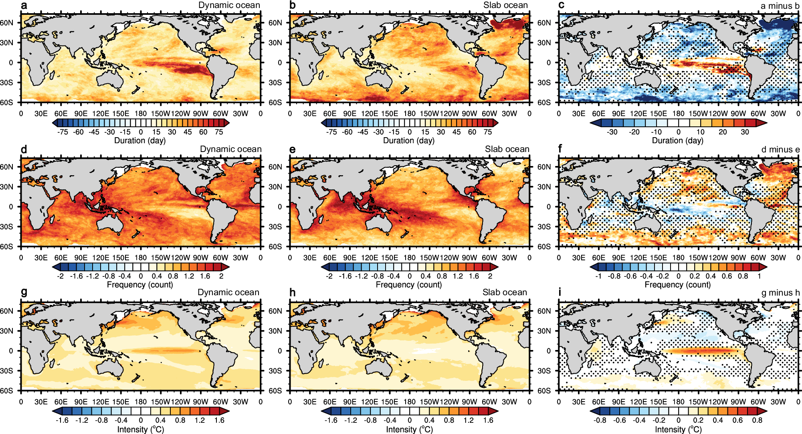
基于日尺度定义的动力海洋（ a ）和slab 海洋（ b ）中的海洋热浪持续时间（颜色阴影，单位：天），以及两者之差（动力海洋减slab 海洋）（ c ）。d–f与（ a – c ）相同，但表示海洋热浪年频次。g–i与（ a – c ）相同，但表示海洋热浪强度。（ c 、 f 、 i ）面板中的点状阴影表示依据Student’s t-test在95%置信水平下差异在统计上不显著的区域。底图来自NCAR Command Language map outline databases。Marine heatwave durations (color shading in days) in ( a ) dynamic and ( b ) slab oceans based on a daily definition, as well as ( c ) the difference between the two (dynamic minus slab). d–f Same as ( a – c ) but for marine heatwave annual frequencies. g–i Same as ( a – c ) but for marine heatwave intensity. The stipples in panels ( c , f , i ) refer to the regions where differences are statistically insignificant based on Student’s t-test at the 95% confidence level. The base map is from NCAR Command Language map outline databases.
图 2：动力海洋和slab 海洋中的厄尔尼诺–南方涛动（ENSO）。
Fig. 2: El Niño-Southern Oscillation in dynamic and slab oceans.
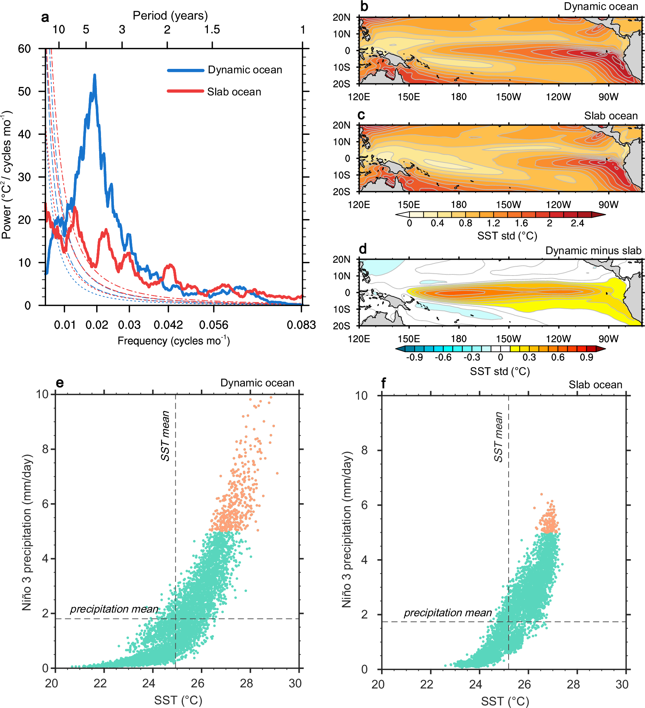
动力海洋（蓝色）和slab 海洋（红色）模拟的Niño 3.4指数功率谱，以及各自的95%置信界限（虚线/点线曲线）（ a ）。动力海洋（ b ）和slab 海洋（ c ）的海表温度标准差（颜色阴影，单位：°C），以及两者之差（动力海洋减slab 海洋）（ d ）。Niño 3区域中月海表温度与月降水的散点图：动力海洋（ e ）和slab 海洋（ f ）。橙色点表示降水大于5 mm/day的情形。黑色垂直和水平虚线分别表示海表温度和降水的气候平均值。底图来自NCAR Command Language map outline databases。a Power spectra of the Niño 3.4 indices of dynamic (blue) and slab (red) ocean simulations as well as their 95% confidence limits (dashed/dotted curves). Sea surface temperature standard deviations (color shading in °C) for ( b ) dynamic and ( c ) slab oceans, and ( d ) the difference between the two (dynamic minus slab). Scatterplots of monthly sea surface temperature versus monthly precipitation in the Niño 3 region for ( e ) dynamic and ( f ) slab oceans. Orange dots represent the cases when precipitation is larger than 5 mm/day. The black vertical and horizontal dashed lines denote the climatological mean values of sea surface temperature and precipitation, respectively. The base map is from NCAR Command Language map outline databases.
我们进一步从极端ENSO的视角阐明海洋动力过程在热带太平洋MHW中的作用。与正常ENSO相比，极端ENSO在参与Bjerknes稳定性的所有反馈中的幅度都更大（方法）；其中，其温跃层反馈对稳定性具有最大的正贡献，因而是使其Bjerknes稳定性高于正常ENSO的关键因素（补充图 3 ）。在月尺度MHW定义下，该区域的MHW与极端ENSO事件内在相关；此类事件以异常高SST及Niño 3降水超过5 mm/day为特征 30 。我们分析了Niño 3区域冬季SST与降水之间的关系，比较动力海洋和slab 海洋条件（图 2e, f ）。与slab 海洋相比，动力海洋中极端ENSO事件更为频繁，并伴有更强的热带降水异常。这表明，海洋动力过程可通过促进海气反馈和海洋垂直热量再分配而加剧极端ENSO的发生，进而导致热带太平洋更强且更持久的MHW 4 , 31 。We further elucidate the role of ocean dynamics in MHWs in the tropical Pacific through the lens of extreme ENSO. In comparison to normal ENSO, extreme ENSO has larger magnitude in all feedbacks involved in the Bjerknes stability (Methods), while its thermocline feedback has the largest positive contribution to the stability, thus serving as the key factor in raising its Bjerknes stability over than that of normal ENSO (Supplementary Fig. 3 ). Benefited from the monthly MHW definition, MHWs in the region are intrinsically linked to extreme ENSO events that are characterized by unusual high SSTs with Niño 3 precipitation exceeding 5 mm/day 30 . We analyze the relationship between winter SST and precipitation in the Niño 3 region, comparing dynamic and slab ocean conditions (Fig. 2e, f ). In contrast to slab ocean, we see more frequent extreme ENSO episodes in dynamic ocean, accompanied by stronger tropical precipitation anomalies. This indicates that ocean dynamics can exacerbate extreme ENSO occurrence by promoting ocean-atmosphere feedback and vertical oceanic heat redistribution, thus leading to stronger and more persistent MHWs in the tropical Pacific 4 , 31 .
除热带地区外，我们发现海洋动力过程在调节中高纬度MHW方面也发挥显著作用。与slab 海洋相比，动力海洋使北太平洋、北大西洋和南大洋的MHW更频繁且持续时间更短，尤其是在格陵兰岛以南和拉布拉多海（图 1 c, f）。海洋动力过程的存在还降低了东北太平洋和西北大西洋MHW的强度（图 1i ）。不同于ENSO动力学，这些区域中动力海洋与slab 海洋之间MHW差异的成因比热带太平洋更为复杂，因此我们采用区域混合层热收支分析。Beyond the tropics, we find that ocean dynamics also play a significant role in modulating MHWs in mid- to high latitudes. A dynamic ocean allows for more frequent and shorter-duration MHWs than a slab ocean over the North Pacific, North Atlantic and Southern Ocean, especially to the south of Greenland and in the Labrador Sea (Fig. 1 c, f). The existence of ocean dynamical process also reduces the intensify of MHWs in the Northeast Pacific and Northwest Atlantic (Fig. 1i ). Unlike ENSO dynamics, accounting for the MHW differences between dynamic and slab oceans in these regions is more complex than in the tropical Pacific, hence we resort to a regional mixed-layer heat budget analysis.
海洋动力过程对MHW的调节Ocean dynamics modulating MHWs
我们进行混合层热收支分解，以考察收支中的关键组分如何在MHW生命周期过程中演变（方法）。我们考察过去几十年的四个MHW热点 2 , 23 ，即从slab 海洋转为动力海洋时MHW增强的Niño 3.4区域，以及MHW减弱的地中海、阿拉斯加湾和湾流区域，以深入探讨海洋动力过程对MHW的不同影响（图 3a ）。对于每个区域，我们对MHW达到峰值时（定义为第0个月）以及峰值前后6个月的热收支进行合成，以描绘MHW生命周期内热收支组分的演变（图 3b–e ）。We perform a mixed-layer heat budget decomposition to look at how the key components in the budget evolve throughout the course of MHW’s lifecycle (Methods). We example four MHW hotspots over the past few decades 2 , 23 , i.e., the Niño 3.4 region where MHWs intensify from a slab to dynamic ocean, and the Mediterranean Sea, Gulf of Alaska, and Gulf Stream regions where MHWs decline, to delve into the distinct impacts of ocean dynamics on MHWs (Fig. 3a ). For each region, we make a composite of heat budget when MHWs peak (designated as month 0), as well as 6 months before and after the peak, to depict the evolution of the heat budget components during the lifecycle of MHWs (Fig. 3b–e ).
图 3：海洋热浪事件期间的混合层海洋热收支。
Fig. 3: Mixed-layer ocean heat budgets during marine heatwave events.
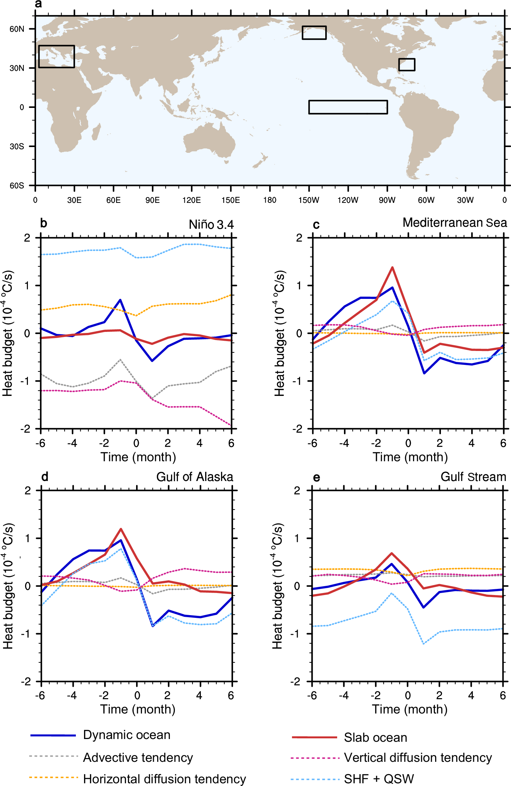
相对于海洋热浪峰值（第0个月）合成的混合层海洋热收支组分的区域平均演变，区域为面板（ a ）中的四个方框区域，即（ b ）Niño 3.4、（ c ）地中海、（ d ）阿拉斯加湾和（ e ）湾流区域。实线表示动力海洋（蓝色）和slab 海洋（红色）的总温度趋势。点线表示动力海洋中分解后的热收支组分：平流趋势（灰色）、水平扩散趋势（橙色）、垂直扩散趋势（洋红色）和净表面热通量（SHF + QSW，浅蓝色，向下为正）。底图来自NCAR Command Language map outline databases。Evolution of regionally averaged mixed-layer ocean heat budget components composited relative to marine heatwave peak (month 0) in four boxed regions in panel ( a ), i.e., the ( b ) Niño 3.4, ( c ) Mediterranean Sea, ( d ) Gulf of Alaska, and ( e ) Gulf Stream regions. Solid lines represent the total temperature tendencies for dynamic(blue) and slab (red) oceans. Dotted lines represent the decomposed components of heat budget in dynamic ocean: advective tendency (gray), horizontal diffusion tendency (orange), vertical diffusion tendency (magenta), and net surface heat flux (SHF + QSW, light blue, downward positive). The base map is from NCAR Command Language map outline databases.
在Niño 3.4区域，动力海洋在MHW峰值前1–2个月表现出快速热量积累，随后下降（图 3b ）。相比之下，slab 海洋中热收支组分的振幅仅约为动力海洋中的四分之一。这是因为slab 海洋中的SST变化主要由净表面热通量变化驱动（补充图 4a ），缺乏内部海洋动力过程的调节。在动力海洋中，表面热通量（补充图 4a ）和水平扩散趋势在整个时段均保持为正，尽管它们可能被负平流趋势和垂直扩散趋势抵消；这些过程共同控制MHW的生命周期（图 3b ）。东部赤道太平洋的冷上升流会产生负垂直扩散趋势，持续对SST异常施加冷却作用 31 。与此同时，在盛行东风影响下，暖表层水向西输送并离开Niño 3.4区域，从而产生负平流趋势。除这种水平平流外，增强的东风还会加强赤道辐散和垂直上升流，两者均进一步促成局地SST冷却 32 。尽管平流项平均为负，但它在MHW生命周期内呈现出明显的时间演变（图 3b ）。在事件早期，赤道暖池中的西风爆发可能暂时增加向东热输送，减弱平流冷却。在后期，随着东风恢复，向西平流加强，平流组分变得更负。Over the Niño 3.4 region, dynamic ocean exhibits a rapid heat accumulation 1–2 months before the MHW peak, followed by a decline afterward (Fig. 3b ). By contrast, the heat budget components in slab ocean have amplitudes only about one-fourth of those in dynamic ocean. This is because SST variations in slab ocean are mainly driven by variations in net surface heat flux (Supplementary Fig. 4a ), lacking the modulation from internal ocean dynamical processes. In dynamic ocean, both surface heat flux (Supplementary Fig. 4a ) and horizontal diffusion tendency remain positive over the whole period, though they could be offset by negative advective and vertical diffusion tendency, which collectively control the life cycle of MHWs (Fig. 3b ). Cold upwelling in the eastern equatorial Pacific induces a negative vertical diffusion tendency, persistently exerting a cooling effect on SST anomalies 31 . Meanwhile, under the influence of prevailing easterly winds, warm surface water is transported westward and away from the Niño 3.4 region, producing a negative advective tendency. In addition to this horizontal advection, the strengthened easterlies also enhance equatorial divergence and vertical upwelling, both of which further contribute to local SST cooling 32 . Although the advective term is negative on average, it exhibits a distinct temporal evolution throughout the MHW lifecycle (Fig. 3b ). During the early stage of the event, westerly wind bursts in the equatorial warm pool may temporarily increase eastward heat transport, weakening the advective cooling. In the later stage, as easterlies recover, westward advection strengthens, and the advection component becomes more negative.
与东部热带太平洋相反，动力海洋中地中海和阿拉斯加湾区域的MHW弱于slab 海洋。slab 海洋中的SST极端事件由净表面热通量变化驱动，该变化在事件峰值前带来强烈、短期的增暖（补充图 4b – c ）。然而，在动力海洋中，净表面热通量带来的增暖效应相对较弱，海洋垂直混合在增暖阶段发挥缓冲作用，降低SST异常的幅度（图 3 c, d）。In contrast to the eastern tropical Pacific, MHWs are weaker in dynamic than slab ocean over the Mediterranean and Gulf of Alaska regions. The SST extreme in slab ocean is driven by net surface heat flux variation, which imposes a strong, short-term warming prior to the event peak (Supplementary Fig. 4b – c ). However, in dynamic ocean, the warming effect from net surface heat flux is relatively weaker, and vertical mixing in the ocean acts as a buffer during the warming phase, lowering the magnitude of SST anomalies (Fig. 3 c, d).
湾流区域值得关注，因为其动力海洋中的热收支振幅远小于slab 海洋，这主要是由于持续为负的净表面热通量（图 3e 和补充图 4d ）。作为通过湍流潜热和感热通量由海洋向大气释放热量最显著的区域之一 33 ，即使海洋平流和扩散过程在MHW峰值前带来正热异常，它们通常也会被强烈的表面热损失压倒（图 3e ）。因此，在MHW峰值前后热量难以在该区域有效积累，这限制了暖SST极端事件的强度。The Gulf Stream region deserves attention because its heat budget amplitude in dynamic ocean is much smaller than that in slab ocean, due mainly to a persistent negative net surface heat flux (Fig. 3e and Supplementary Fig. 4d ). As one of the most notable regions for heat release from ocean to atmosphere via turbulent latent and sensible heat fluxes 33 , even oceanic advection and diffusion processes bring about positive heat anomalies prior to MHW peaks, they are typically overwhelmed by strong surface heat loss (Fig. 3e ). Therefore, it is difficult for heat to accumulate effectively in this region before and after the MHW peak, which limits the intensity of warm SST extreme.
AMOC对北大西洋MHW可预测性的影响AMOC impact on North Atlantic MHW predictability
我们的热收支分析突出了海洋动力过程在调节MHW演变中的重要性，同时也促使我们研究动力海洋与slab 海洋之间的差异是否会表现为气候系统内长期、可预测的信号。为此，我们采用潜在可预测性方差比例（ppvf）作为诊断指标，从空间分布和时间尺度的角度评估全球MHW特征的长期可预测性。Our heat budget analysis highlights the importance of ocean dynamics in regulating MHW evolution, and meanwhile, encourages the investigation into whether the differences between dynamic and slab oceans manifest as long-term, predictable signals within the climate system. To this end, we employ the potential predictability variance fraction (ppvf) as a diagnostic metric to evaluate the long-term predictability of global MHW characteristics from the perspectives of spatial distribution and temporal scale.
图4展示了在5年、10年和25年滑动平均下全球MHW频次ppvf的空间分布。相对于slab 海洋（图 4 b, d, f），动力海洋（图 4 a, c, e）在北大西洋、南大洋和西北太平洋通常呈现更高的ppvf值，表明这些区域具有相对稳定的低频变率，因而在多年到年代际时间尺度上具有潜在可预测性。这一发现与以往关于SST潜在可预测性的研究一致 34 , 35 。Figure 4 depicts the spatial distribution of the ppvf of global MHW frequency under 5-year, 10-year, and 25-year running means. Relative to slab ocean (Fig. 4 b, d, f), dynamic ocean (Fig. 4 a, c, e) shows generally higher ppvf values in the North Atlantic, Southern Ocean, and western North Pacific, indicative of relatively stable low-frequency variability in these regions and hence potential predictability on multi-year to decadal timescale. This finding is consistent with previous studies on SST potential predictability 34 , 35 .
图 4：海洋热浪频次的潜在可预测性方差比例。
Fig. 4: Potential predictability variance fraction for marine heatwave frequency.
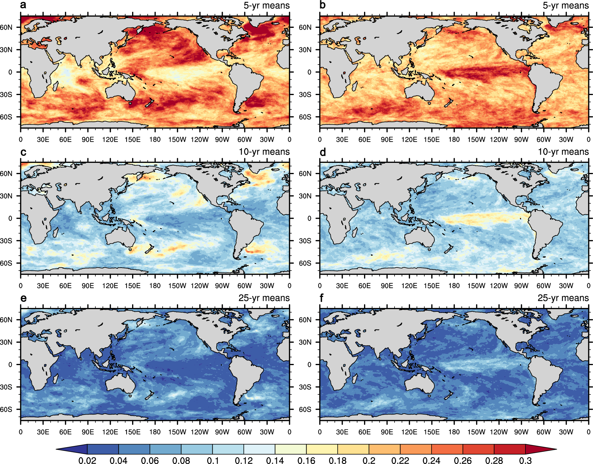
动力海洋中（ a ）5年、（ c ）10年和（ e ）25年平均海洋热浪年频次的潜在可预测性方差比例（ppvf）。（ b 、 d 、 f ）与（ a 、 c 、 e ）相同，但对应slab 海洋。底图来自NCAR Command Language map outline databases。Potential predictability variance fraction (ppvf) for ( a ) 5-year, ( c ) 10-year, and ( e ) 25-year average marine heatwave annual frequency in dynamic ocean. b , d , f Same as ( a , c , e ) but for slab ocean. The base map is from NCAR Command Language map outline databases.
相比之下，slab 海洋在所有时间尺度上均显示出比动力海洋高得多的赤道太平洋ppvf水平（图 4 b, d, f）。尽管缺少水平热输送、翻转环流和赤道上升流等活跃海洋动力过程，slab 海洋模式仍表现出热带太平洋显著的年代际至多年代际SST持续性。这种增强的低频稳定性源于浅混合层作为持续大气强迫的积分器，尤其是云辐射反馈 36 和风–蒸发–SST（WES）反馈 37 ，且不存在全耦合模式中起抵消作用的海洋负反馈（例如通过上升流、Kelvin/Rossby波进行的热量再分配）。因此，slab 海洋配置中的热带SST异常可在数十年时间尺度上保持相干 25 , 26 , 38 , 39 。By contrast, slab ocean displays considerably higher ppvf levels than dynamic ocean over the equatorial Pacific across all the timescales (Fig. 4 b, d, f). Despite lacking active ocean dynamics such as horizontal heat transport, overturning circulation, and equatorial upwelling, the slab ocean model exhibits pronounced decadal-to-multidecadal SST persistence in the tropical Pacific. The enhanced low-frequency stability arises in that the shallow mixed layer acts as an integrator of persistent atmospheric forcing, particularly cloud radiative feedback 36 and wind-evaporation-SST (WES) feedback 37 , without the counteracting oceanic negative feedback (e.g., heat redistribution via upwelling, Kelvin/Rossby waves) that is present in the fully coupled model. As a result, tropical SST anomalies in slab configurations can remain coherent across multi-decadal timescales 25 , 26 , 38 , 39 .
在动力海洋中，北大西洋的MHW频次、持续时间和强度在所有时间尺度上均具有显著的高可预测性，这可能与AMOC的可预测性有关。这是因为AMOC是控制该区域年代际海洋热含量和SST变率的关键因素 20 。因此，我们采用平均可预测时间（APT）方法（方法），识别北大西洋上最主要且最具可预测性的MHW频次、持续时间和强度组分，以及它们与AMOC的联系。In dynamic ocean, the North Atlantic has conspicuously high predictability in terms of MHW frequency, duration, and intensity across all the timescales, which is potentially linked to AMOC predictability. This is because the AMOC serves as a key factor controlling the variability of ocean heat content and SST in this region on a decadal scale 20 . We therefore use the Average Predictability Time (APT) approach (Methods) to identify the leading and the most predictable MHW frequency, duration, and intensity components over the North Atlantic as well as their linkage to the AMOC.
动力海洋中MHW频次的最可预测组分（APT1）在拉布拉多海/格陵兰岛南部与湾流区域之间表现出相反的异常（图 5a ）。这种偶极型格局类似于众所周知的AMOC指纹 20 , 40 , 41 ，表明APT1模态可能与AMOC的低频变率有关 42 , 43 , 44 。从平方复相关系数（R 2 ，方法）可以看出，APT1可在大约提前5年时仍保持预测技巧（图 5c ），这可由AMOC与APT时间序列之间的超前/滞后相关来理解（图 5d ）。特别是，当AMOC提前6年时，AMOC流函数在整个海盆与APT1指数呈现显著负相关，这表明减弱的AMOC需要6年时间才能改变北大西洋的SST。这主要是由于AMOC及其相关经向热输送异常从北大西洋深水形成区向南传播，其速度与深水内部路径中的示踪物平流速度相当 45 ；北向热输送减少会在格陵兰岛以南产生负SST异常 39 , 46 ，而湾流北移会产生正SST异常 43 , 47 。两个地点截然不同的平均态SST变化又以不同方式改变其SST概率分布的形状，降低格陵兰岛以南MHW发生的可能性 19 ，但提高湾流区域的可能性。我们的结果表明，APT1不仅具有统计稳定性，还承载着AMOC长期变率的热记忆。The most predictable component (APT1) for MHW frequency in dynamic ocean manifests opposing anomalies between the Labrador Sea/South Greenland and the Gulf Stream region (Fig. 5a ). Such dipole-like pattern resembles the well-known AMOC fingerprint 20 , 40 , 41 , indicating that the APT1 mode is potentially linked to low-frequency variability of the AMOC 42 , 43 , 44 . Seen from the squared multiple correlation coefficient (R 2 , Methods), APT1 retains predictive skill up to around 5 years in advance (Fig. 5c ), which could be understood from lead/lag correlations between AMOC and APT timeseries (Fig. 5d ). In particular, the AMOC stream-function delineates a significant negative correlation with the APT1 index across the basin when the AMOC leads by 6 years, suggesting that it will take 6 years for a slowed AMOC to modify the SST over the North Atlantic. This is due primarily to the southward propagation of AMOC and associated meridional heat transport anomalies from the North Atlantic deep water formation region, at a speed of tracer advection along the interior pathways of the deep water 45 , creating negative SST anomalies to the south of Greenland via reduced northward heat transport 39 , 46 and positive SST anomalies via shifting the Gulf Stream northward 43 , 47 . The distinct mean-state SST shifts in the two locations, in turn, alter their shapes of SST probability distributions differently, lowering the likelihood of MHW occurrence to the south of Greenland 19 but raising it in the Gulf Stream region. Our result explains that APT1 not only has statistical stability but also carries the heat memory of AMOC’s long-term variability.
图 5：动力海洋和slab 海洋中北大西洋海洋热浪频次的可预测性。
Fig. 5: North Atlantic marine heatwave frequency predictability in dynamic and slab oceans.
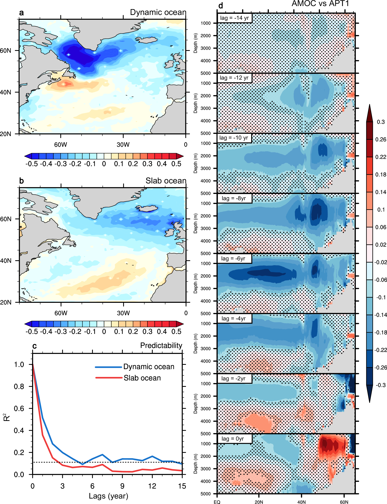
北大西洋海洋热浪年频次的主导可预测组分（APT1）：（ a ）动力海洋和（ b ）slab 海洋；以及（ c ）平方复相关系数R 2（动力海洋，蓝色；slab 海洋，红色）。（ c ）中的黑色虚线表示95%显著性水平。（ d ）大西洋经向翻转流函数与北大西洋海洋热浪年频次APT1指数之间的超前/滞后相关。滞后范围为−14至0年，其中负滞后表示大西洋经向翻转环流（AMOC）领先APT指数。点状阴影表示在95%置信水平下相关在统计上不显著的区域。底图来自NCAR Command Language map outline databases。The leading predictable component (APT1) of North Atlantic marine heatwave annual frequency in ( a ) dynamic and ( b ) slab oceans, as well as ( c ) the squared multiple correlation coefficients R 2 (dynamic ocean, blue; slab ocean, red). The dashed black line in ( c ) denotes the 95% significance level. d Lead/lag correlation between Atlantic meridional overturning stream-function and APT1 index for North Atlantic marine heatwave annual frequency. Lags range from −14 to 0 years, in which negative lags indicate that the Atlantic Meridional Overturning Circulation (AMOC) leads the APT index. The stipples refer to the regions where correlations are statistically insignificant at the 95% confidence level. The base map is from NCAR Command Language map outline databases.
在slab 海洋中，MHW频次APT1的空间结构相对于动力海洋向东偏移，且振幅较小（图 5b ）。这种东移可能源于slab 海洋配置下缺乏由AMOC驱动的热输送西边界强化和深海热交换。SST异常在欧洲西海岸等区域更容易形成并持续。与动力海洋相比，APT1的可预测时间显著缩短（图 5c ），R 2信号在2年内迅速衰减。In slab ocean, the spatial structure of APT1 for MHW frequency is displaced eastward with smaller amplitude than dynamic ocean (Fig. 5b ). The eastward shift likely results from an absence of the AMOC-driven western boundary intensification of heat transport and deep-ocean heat exchange under the slab ocean configuration. SST anomalies are more readily to form and persist in regions such as the west coast of Europe. Compared to dynamic ocean, the predictability time of APT1 is remarkably reduced (Fig. 5c ), with a rapid decay of R 2 signal within 2 years.
除MHW年频次外，我们还考察了MHW持续时间和强度的ppvf分布（补充图 5 和图 6 ）、APT1，以及APT模态与AMOC之间的联系（补充图 7 和图 8 ）。我们发现，结果与MHW频次的结果十分相似，表明AMOC的可预测性不仅支持北大西洋MHW频次的多年潜在可预测性，也支持其持续时间和强度的多年潜在可预测性。In addition to MHW annual frequency, we also examine ppvf distributions (Supplementary Fig. 5 and Fig. 6 ), APT1, and the link between APT modes and the AMOC (Supplementary Fig. 7 and Fig. 8 ) for MHW duration and intensity. We find that the results are quite similar to those from MHW frequency, suggesting that AMOC predictability supports the multi-year potential predictability, not only for MHW frequency, but also for MHW duration and intensity, over the North Atlantic.
讨论Discussion
在本研究中，我们利用一种广泛使用的气候模式比较了动力海洋和 slab 海洋配置，以评估海洋动力过程在调控全球海洋热浪（MHW）特征及其可预测性中的作用。我们发现，海洋动力过程显著增强了多个关键区域 MHW 的强度和持续时间，尤其是在厄尔尼诺–南方涛动（ENSO）高度活跃的热带东太平洋。动力海洋中的海表温度（SST）方差以及具有 2–7 年周期的 ENSO 功率谱均远高于 slab 海洋，这反映出海气耦合反馈和海洋热输送对于维持强 SST 异常的重要性。尽管海洋动力过程会降低年际至年代际时间尺度上 ENSO 区域 MHW 的可预测性，我们的热收支分析表明，动力海洋中 MHW 事件期间的热量积累显著受垂直混合和水平输送过程影响，从而导致 SST 异常的振幅及其演变节律不同于 slab 海洋。此外，我们发现，在具有动力海洋的北大西洋 MHW 中存在很强的多年潜在可预测性，这主要归因于大西洋经向翻转环流（AMOC）的可预测性。对于 MHW 的频率、持续时间和强度，我们识别出了最具可预测性的模态。该模态反映了 AMOC 在不同阶段的热输送调控能力，表征了其正、负位相对 MHW 频率、持续时间和强度的滞后响应。In this study, we compare the dynamic and slab ocean configurations with a broadly used climate model to assess the role of ocean dynamics in regulating the characteristics and predictability of global MHWs. We find that ocean dynamics significantly increase the intensity and duration of MHWs in multiple key regions, particularly in the eastern tropical Pacific where ENSO is highly active. SST variance and ENSO power spectrum with a 2–7-year cycle are much higher in dynamic than slab ocean, reflecting the importance of air-sea coupling feedback and ocean heat transport in maintaining strong SST anomalies. While ocean dynamics reduce MHW predictability in the ENSO region on interannual-to-decadal timescales. Our heat budget analysis shows that the accumulation of heat in MHW episodes in dynamic ocean is markedly influenced by vertical mixing and horizontal transport processes, leading to SST anomalies that differ in amplitude and evolution rhythm from those in slab ocean. Furthermore, we find strong multi-year potential predictability in the MHWs over the North Atlantic with a dynamic ocean, owing primarily to AMOC predictability. For MHW frequency, duration, and intensity, we identify the most predictable mode. It reflects the heat transport regulation capacity of the AMOC at different stages, representing the lagged response of its positive and negative phases to MHW frequency, duration and intensity.
我们的发现揭示，海洋动力过程不仅塑造 MHW 的空间结构和演变，还通过调制低频 SST 变率，显著提高了中高纬度 MHW 在多年代际尺度上的可预测性。特别是，AMOC 的变化为北大西洋提供了有价值的预测信息。这种由 AMOC 诱导的可预测性即使在人为强迫下仍然存在（方法，补充图 9）。另一方面，值得注意的是，前工业模拟中的潜在可预测性方差比例（ppvf）和平均可预测时间（APT）均反映出完美模式技巧，这意味着初始条件完美且不存在模式偏差。因此，所得结果反映了预测技巧的上限。在现实中，由于模式偏差和不完美初始条件的存在，预测技巧通常低于完美模式技巧。Our findings reveal that ocean dynamics not only shape the spatial structure and evolution of MHWs but also significantly enhance the multi-decadal predictability of MHWs in mid-to-high latitudes by modulating low-frequency SST variability. In particular, changes in the AMOC provide valuable predictive information for the North Atlantic. This AMOC induced predictability even persists under anthropogenic forcings (Methods, Supplementary Fig. 9 ). On the other hand, it merits attention that both ppvf and APT from the preindustrial simulations detect a perfect model skill, implying perfect initiation conditions and no model biases. As a result, the outcome reflects the upper limit of prediction skill. In reality, prediction skill is usually lower than perfect model skill due to the existence of model bias and imperfect initial conditions.
方法Methods
观测资料Observations
我们采用日尺度最优插值海表温度第 2.1 版（OISST v2.1）48，其空间分辨率为 0.25°×0.25°，自 1981 年 9 月 1 日起可用。基于 OISST v2.1，我们展示了 1982 至 2024 年全球海洋中观测到的海洋热浪（MHW）。我们还使用了月尺度扩展重建海表温度第 6 版（ERSSTv6）49，其空间分辨率为 2°×2°，自 1850 年起可用；以及月尺度 CPC 合并降水分析（CMAP）50，其空间分辨率为 2.5°×2.5°，自 1979 年起可用。We employ the daily Optimum Interpolation Sea Surface Temperature version 2.1 (OISST v2.1) 48 , which has a spatial resolution of 0.25°×0.25° and is available since 1 September 1981. Based on OISST v2.1, we illustrate the observed marine heatwaves (MHWs) over global oceans from 1982 to 2024. We also harness the monthly Extended Reconstructed Sea Surface Temperature version 6 (ERSSTv6) 49 that has a spatial resolution of 2°×2° and is available since 1850, as well as the monthly CPC Merged Analysis of Precipitation (CMAP) 50 that has a spatial resolution of 2.5°×2.5° and is available since 1979.
模式模拟Model simulation
我们采用具有 CAM5 大气分量和日尺度海表温度（SST）输出的 Community Earth System Model 第 1 版（CESM1）名义 1 度经纬度版本 51。具体而言，我们使用两组前工业控制模拟：一组采用完全耦合配置（即“动力海洋”），另一组采用 slab 海洋配置（即“slab 海洋”）。完全耦合配置包含一个动力海洋分量（POP2），可显式解析海洋环流和热输送过程；而 slab 海洋则以受指定 Q-flux 约束的热力学混合层模式替代海洋动力过程。请注意，slab 海洋模式全年采用年平均混合层深度，因而未考虑混合层的季节变化，而 MHW 可能与混合层深度变化有关 52。鉴于 slab 海洋中的表面温度代表冰面温度而非海洋表面温度，我们排除了动力海洋或 slab 海洋模拟中任一者存在海冰时空条件下的 MHW。我们使用每个模拟的最后 500 年，这一时段足以确保对低频变率进行稳健的统计分析；例如，对于动力海洋，可分析与大西洋经向翻转环流（AMOC）相关的变率。动力海洋与 slab 海洋模拟之间的比较，有助于理解交互式海洋动力过程及耦合反馈过程如何影响全球 MHW 的演变和可预测性。We leverage the nominal 1-degree latitude/longitude version of the Community Earth System Model version 1 (CESM1) with CAM5 atmosphere and daily sea surface temperature (SST) output 51 . Specifically, we use two preindustrial control simulations: one with a fully coupled configuration (namely “dynamic ocean”) and the other with a slab ocean configuration (namely “slab ocean”). The fully coupled configuration includes a dynamic ocean component (POP2) that explicitly resolves oceanic circulation and heat transport processes, while the slab ocean replaces ocean dynamics with a thermodynamic mixed-layer model constrained by prescribed Q-flux. Note that the slab ocean model adopts an annual mean mixed-layer depth throughout the year, so does not account for seasonal mixed layer variability, whereas MHWs could be associated with mixed layer depth variations 52 . We exclude MHWs when and where sea ice presents for either dynamic or slab ocean simulation, considering that surface temperatures in slab ocean represent the temperatures over the ice surface rather than the ocean surface. We exploit the last 500 years in either simulation, which are long enough to ensure robust statistical analysis of low-frequency variability, for example in dynamic ocean, the variability associated with the Atlantic Meridional Overturning Circulation (AMOC). Comparison between the dynamic and slab ocean simulations provides insight into how interactive ocean dynamics, along with coupled feedback processes, influence the evolution and predictability of global MHWs.
海洋热浪的识别Detection of marine heatwaves
MHW 被识别为 SST 异常偏高且超过随季节变化阈值的时段。遵循文献 53 确立的定义，我们将 MHW 定义为 SST 连续至少五天超过当地逐日气候态第 90 百分位数的任何时段。中断少于 3 天的两个事件被视为一个 MHW 事件。对于两组模拟，耦合和 slab 海洋试验的每个日历日逐日 SST 气候态及相应的第 90 百分位数阈值均分别计算，计算时使用以该日为中心前后各 11 天内所有年份的逐日 SST，随后对所得时间序列进行 31 天滑动平均平滑。我们分析了 CESM1 前工业控制模拟中动力海洋和 slab 海洋配置下 500 年期间 MHW 的频率、持续时间和强度等特征。频率定义为每年的事件数；持续时间定义为事件开始日期与结束日期之间的时间；强度定义为每个 MHW 的最大强度，即在事件持续期间相对于随季节变化气候态的最大 SST 异常。MHWs are identified as periods of anomalously high SSTs exceeding a seasonally varying threshold. Following the definition established by ref. 53 , we define an MHW as any period where SST exceeds the 90th percentile of local daily climatology for at least five consecutive days. Two events with an interruption of less than 3 days are considered as one MHW event. For both simulations, the daily SST climatology and the corresponding 90th percentile threshold for each calendar day are calculated separately for the coupled and slab ocean runs, using the daily SST for all years within 11 days centered on that day, and the resulting time series are subsequently smoothed using a 31-day moving average. We analyze characteristics of MHWs such as frequency, duration, and intensity in CESM1 preindustrial control simulations over a 500-year period under dynamic and slab ocean configurations. Frequency is defined as the number of events per year; duration is defined as the time between the start and end date of the event; and intensity is defined as the maximum intensity of each MHW, denoting the maximum SST anomaly relative to a seasonally varying climatology over the duration of the event.
除 CESM1 动力海洋前工业控制模拟外，我们还考察了该配置的 CESM1 大集合模拟 54；该模拟在历史（截至 2005 年）和代表性浓度路径 8.5（2005 年后）外部强迫下进行，由 1920 至 2024 年间的 40 个成员组成（为简便起见，称为历史大集合）。我们将动力海洋前工业 MHW 与 OISST v2.1（1982–2024）进行比较，也基于逐日 MHW 定义，将其与同一时期（1982–2024）的历史大集合 MHW 进行比较（补充图 10）。我们发现，这三套数据在全球尺度上的 MHW 特征是一致的。然而，作为非涡旋解析模式中反复出现的问题 55，CESM1 历史和前工业模拟的 MHW 持续时间更长、年平均 MHW 频率更低、MHW 强度更小，均不同于观测。此类模式—观测差异的存在，是因为在观测中逐日 SST 气候态基于这一单一实现，而在模式中，可使用 40 成员集合平均（对于历史大集合）或 500 年平均（对于前工业模拟）的逐日 SST 气候态。CESM1 历史和前工业模拟之间的比较进一步表明，人为气溶胶和温室气体强迫很少改变 MHW 持续时间、频率和强度的全球分布型，只会略微改变其量级。Besides the CESM1 dynamic-ocean preindustrial control simulation, we look into CESM1 large ensemble simulations of this configuration 54 , which are under historical (by 2005) and representative concentration pathway 8.5 (after 2005) external forcings, consisting of 40 members between 1920 and 2024 (historical large ensemble for simplicity). We compare dynamic-ocean preindustrial MHWs with OISST v2.1 (1982–2024), and also with historical large ensemble MHWs during the same period (1982–2024) based on the daily MHW definition (Supplementary Fig. 10 ). We find consistent MHW characteristics amongst the three suites over a global scale. Nonetheless, as a recurrent issue in non-eddy-resolved models 55 , CESM1 historical and preindustrial simulations have longer MHW durations, lower annual mean MHW frequencies and smaller MHW intensities than observations. Such model-observation discrepancy exists because in observation the daily SST climatology is based on this sole realization, whilst in the model, either a 40-member ensemble mean (for historical large ensemble) or a 500-year average (for preindustrial simulation) daily SST climatology can be harnessed. Comparison between CESM1 historical and preindustrial simulations further evinces that anthropogenic aerosol and greenhouse gas forcings seldom alter the global patterns of MHW duration, frequency and intensity while just slightly modifying their magnitude.
我们还采用了与文献 56 一致的月尺度 MHW 定义，其中海洋热浪月定义为 SST 超过该日历月气候分布第 90 百分位数的任何月份，该气候分布基于完整的 500 年模拟。采用这一月尺度定义的主要动机，是便于分析海洋动力过程和海洋热收支诊断，两者都需要比 SST 更多的变量。然而，这些变量仅以月频率而非日频率提供于模式输出中。与从日尺度 SST 数据导出的 MHW（图 1）相比，月尺度 MHW 在全球海洋中的持续时间、年频率和强度表现出一致的分布型（补充图 2），为面向机制的分析提供了合理基础。We also adopt a monthly MHW definition consistent with ref. 56 , in which a marine heatwave month is defined as any month during which SST exceeds the 90th percentile of the climatological distribution for that calendar month, based on the full 500-year simulation. The primary motivation for harnessing this monthly definition is to facilitate the analysis of ocean dynamical processes and oceanic heat budget diagnostics, both of which require more variables than SST. Nonetheless, these variables are only provided in the model output at a monthly frequency, not on a daily basis. Compared to MHWs derived from daily SST data (Fig. 1 ), the monthly MHWs show consistent patterns in duration, annual frequency, and intensity over global oceans (Supplementary Fig. 2 ), providing a reasonable basis for mechanism-oriented analysis.
除 CESM1 外，我们还采用了耦合模式比较计划第 3 阶段（CMIP3，见补充表 1）的 10 个气候模式，这些模式具有动力海洋或 slab 海洋的前工业控制模拟。受数据可用性限制，我们基于月尺度 MHW 定义研究这些模式中的 MHW。我们发现，CMIP3 多模式平均与 CESM1 总体上呈现一致的 MHW 分布型（图 2 和补充图 2），这表明我们的发现具有稳健性和普适性。In addition to CESM1, we leverage 10 climate models from Coupled Model Intercomparison Project phase 3 (CMIP3, see Supplementary Table 1 ) that have preindustrial control simulations with either dynamic or slab ocean. We investigate MHWs from these models based on the monthly MHW definition due to data availability. We find that CMIP3 multi-model mean follows generally consistent MHW patterns with CESM1 (Fig. 2 and Supplementary Fig. 2 ), which demonstrates the robustness and generalizability of our findings.
厄尔尼诺–南方涛动（ENSO）El Niño-Southern Oscillation (ENSO)
我们将 CESM1 前工业（500 年）和历史（1920–2024）模拟的 ENSO 变率与观测（ERSSTv6，1920–2024）进行比较。我们发现，CESM1 在前工业和历史模拟中均捕捉到了观测到的、在约四年处达到峰值的 ENSO 变率，尽管人为强迫降低了历史时期的 ENSO 变率（补充图 11）。我们还比较了观测和模拟的极端 ENSO 事件，其特征为异常高的 SST 且 Niño 3 降水超过 5 mm/day 30。聚焦于 1979 至 2024 年间此类事件，在此期间 ERSSTv6 和 CMAP 数据均可用，我们发现 CESM1 历史大集合总体上能够很好地模拟历史时期的观测特征（补充图 12）。We compare ENSO variability from CESM1 preindustrial (500 years) and historical (1920-2024) simulations with observations (ERSSTv6, 1920–2024). We discover that CESM1 captures the observed ENSO variability peaking around four years in both preindustrial and historical simulations, albeit anthropogenic forcings reduce ENSO variability during the historical period (Supplementary Fig. 11 ). We also compare the observed and simulated extreme ENSO events that are characterized by unusual high SSTs with Niño 3 precipitation exceeding 5 mm/day 30 . Focusing on such events between 1979 and 2024 during which both ERSSTv6 and CMAP data are available, we find that CESM1 historical large ensemble can generally well simulate the observed characteristics during the historical era (Supplementary Fig. 12 ).
我们进一步考察了 Bjerknes（BJ）稳定性指数，该指数通过量化赤道太平洋耦合海洋–大气反馈的强度和平均态，表征 ENSO 的增长率 57。BJ 指数可写为We further examine the Bjerknes (BJ) stability index, which characterizes the growth rate of ENSO by quantifying the strength and mean state of the coupled ocean–atmosphere feedbacks in the equatorial Pacific 57 . The BJ index can be written as
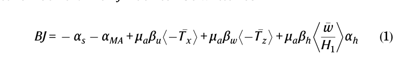
其由热带中东太平洋上层 50 m（5°S–5°N，180°–80°W）线性化的混合层温度异常方程导出。Bjerknes 稳定性指数中的系数依赖于模式，并直接由 CESM1 模拟诊断得出。具体而言，\(\alpha\) 和 \(\beta\) 参数衡量海洋和大气响应对 SST 异常的线性敏感度，并通过 SST 异常与相应反馈项之间的线性回归进行估计。在式（1）中，\(\,-{\alpha }_{s}\) 表示热力学阻尼（TD），而 \(-{\alpha }_{{MA}}\) 表示平均平流反馈（MA）。项 \({\mu }_{a}{\beta }_{u}\left\langle -\bar{{T}_{x}}\right\rangle\) 表示纬向平流反馈（ZA），\({\mu }_{a}{\beta }_{w}\left\langle -\bar{{T}_{z}}\right\rangle\) 表示 Ekman 上升流反馈（EK），而 \({\mu }_{a}{\beta }_{h}\left\langle \frac{\bar{w}}{{H}_{1}}\right\rangle {\alpha }_{h}\) 表示温跃层反馈（TH）。这些项共同刻画了背景态如何调制 ENSO 增长，包括气候态纬向和垂直温度梯度及海洋垂直速度（\(\bar{{T}_{x}}\)、\(\bar{{T}_{z}}\)、\(\bar{w}\)）、风应力对 SST 异常的敏感度（\({\mu }_{a}\)），以及 SST 异常与异常风应力之间影响温跃层坡度、上升流和纬向流变化的耦合（\({\beta }_{u}\)、\({\beta }_{w}\) 和 \({\beta }_{h}\)）。参数 \({\alpha }_{h}\) 表示次表层温度和海平面异常对 SST 的影响，\({H}_{1}\) 表示与垂直平流相关的有效深度。在分析中，我们考察极端或正常 ENSO 事件的 Bjerknes 稳定性。基于 Niño 3.4 指数，我们选择 SST 异常超过 ±2σ 的极端 ENSO 事件，以及 SST 异常为 ±1σ 至 ±2σ 的正常 ENSO 事件，其中 σ 表示 SST 的一个标准差（补充图 3a）。这一极端 ENSO 的标准差定义与前述的降水定义一致 58。which is derived from the linearized mixed-layer temperature anomaly equation in the upper 50 m of the tropical east-central Pacific (5°S-5°N, 180°-80°W). The coefficients in the BJ stability index are model dependent and diagnosed directly from the CESM1 simulations. Specifically, the \(\alpha\) and \(\beta\) parameters evaluate the linear sensitivities of oceanic and atmospheric responses to SST anomalies and are estimated via linear regressions between SST anomalies and the corresponding feedback terms. In Eq. ( 1 ), \(\,-{\alpha }_{s}\) represents the thermodynamic damping (TD), while \(-{\alpha }_{{MA}}\) denotes mean advection feedback (MA). The term \({\mu }_{a}{\beta }_{u}\left\langle -\bar{{T}_{x}}\right\rangle\) represents the zonal advection feedback (ZA), \({\mu }_{a}{\beta }_{w}\left\langle -\bar{{T}_{z}}\right\rangle\) represents the Ekman upwelling feedback (EK) and \({\mu }_{a}{\beta }_{h}\left\langle \frac{\bar{w}}{{H}_{1}}\right\rangle {\alpha }_{h}\) represents the thermocline feedback (TH). These terms collectively capture how the background state modulates ENSO growth, including the climatological zonal and vertical temperature gradients and vertical ocean velocity ( \(\bar{{T}_{x}}\) , \(\bar{{T}_{z}}\) , \(\bar{w}\) ), the sensitivity of wind stress to SST anomalies ( \({\mu }_{a}\) ), and the coupling between SST anomalies and anomalous wind stress ( \({\beta }_{u}\) , \({\beta }_{w}\) , and \({\beta }_{h}\) ) that affects thermocline slope, upwelling, and zonal current variations. The parameter \({\alpha }_{h}\) represents the impact of subsurface temperature and sea-level anomalies on SST, and \({H}_{1}\) denotes an effective depth relevant to vertical advection. In the analysis, we look into the Bjerknes stability for either extreme or normal ENSO events. Based on Niño 3.4 index, we choose extreme ENSO events with SST anomalies exceeding ±2σ and normal ENSO events with SST anomalies of ±1σ to ±2σ, where σ denotes one standard deviation of SST (Supplementary Fig. 3a ). This standard-deviation definition of extreme ENSO is consistent with the aforementioned precipitation definition 58 .
混合层海洋热收支分析Mixed-layer ocean heat budget analysis
为研究海洋动力过程如何调制 MHW，我们对 slab 海洋和动力海洋均进行混合层海洋热收支分析。在 slab 海洋中，slab（即海洋混合层）内平均温度（\(\bar{T}\)）的变化率由净表面热通量与指定海洋热通量汇聚之间的平衡决定 59，表述为：To investigate how ocean dynamic processes modulate MHWs, we perform a mixed-layer ocean heat budget analysis for both slab and dynamic oceans. In the form ocean, the tendency of averaged temperate ( \(\bar{T}\) ) over the slab, i.e., the ocean mixed layer, is determined by a balance between net surface heat flux and prescribed ocean heat flux convergence 59 , as expressed by:
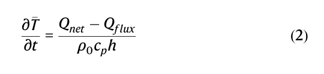
其中，\(\,{Q}_{{net}}\) 为净表面热通量（包括短波、长波、潜热和感热分量），\({Q}_{{flux}}\) 表示指定的海洋热输送汇聚，\({\rho }_{0}\) 为参考海洋密度，\({c}_{p}\) 为海洋热容量，\(h\) 为随地理位置变化的混合层深度。这一简化框架假定不存在活跃的海洋动力过程，通常用于分离 SST 对大气强迫的热力学响应。where \(\,{Q}_{{net}}\) is net surface heat flux (including shortwave, longwave, latent, and sensible components), \({Q}_{{flux}}\) indicates a prescribed ocean heat transport convergence, \({\rho }_{0}\) is reference ocean density, \({c}_{p}\) is heat capacity of the ocean, and \(h\) is mixed layer depth that varies geographically. This simplified framework assumes no active ocean dynamics and is commonly used to separate the thermodynamic response of SST to atmospheric forcing.
在动力海洋中，混合层热收支 60 通过从 \(-h\) 深度积分至海表（\(z=0\)）导出，遵循下式：In dynamic ocean, the mixed-layer heat budget 60 is derived by vertically integrating from the level of \(-h\) to the surface ( \(z=0\) ), following the equation:
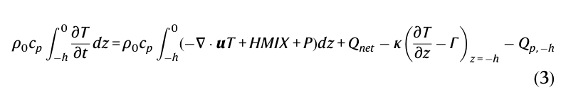
其中，\(T\) 为混合层中的海洋温度，\(\nabla\) 表示 3D 梯度算子，\({{{\boldsymbol{u}}}}\) 表示 3D 海洋速度，\({HMIX}\) 表示水平混合，\(P\) 表示参数化输送的汇聚，\(\kappa\) 为垂直扩散率，\(\varGamma\) 为 KPP 温度反梯度通量，\({Q}_{p,-h}\) 为 - h 深度处的穿透热通量。因此，动力海洋中混合层平均温度的变化率为where \(T\) is ocean temperature in the mixed layer, \(\nabla\) denotes 3D gradient operator, \({{{\boldsymbol{u}}}}\) denotes 3D ocean velocity, \({HMIX}\) denotes horizontal mixing, \(P\) denotes the convergence of parameterized transport, \(\kappa\) is vertical diffusivity, \(\varGamma\) is the KPP countergradient flux of temperature and \({Q}_{p,-h}\) is the penetrative heat flux at the level of - h . Thus, the tendency of averaged temperate over the mixed layer in dynamic ocean is
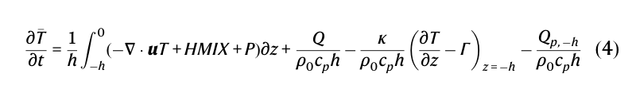
其中，\(\frac{\partial \bar{T}}{\partial t}=\frac{1}{h}{\int }_{-h}^{0}\frac{\partial T}{\partial t}{dz}.\) 通过热收支分析，我们能够量化表面热通量、海洋平流以及水平和垂直混合对混合层温度变化率的贡献，从而确定主导 MHW 演变的因素。where \(\frac{\partial \bar{T}}{\partial t}=\frac{1}{h}{\int }_{-h}^{0}\frac{\partial T}{\partial t}{dz}.\) Through the heat budget analysis, we are able to quantify the contributions of surface heat fluxes, ocean advection, horizontal and vertical mixing to mixed-layer temperature tendency to determine the dominant factor on MHW evolution.
潜在可预测性方差比例分析Potential predictability variance fraction analysis
为识别 MHW 持续时间、年频率和强度的可预测性，我们采用文献 34、35 的方法计算潜在可预测性方差比例（ppvf）。ppvf 定义为长时间尺度（或低频）变率 \({\sigma }_{L}^{2}\) 相对于总变率 \({\sigma }^{2}\) 的比例。总气候变率可分解为低频分量 \({\sigma }_{L}^{2}\) 和残余噪声分量 \({\sigma }_{\varepsilon }^{2}\)，即：To detect the predictability of MHW duration, annual frequency, and intensity, we calculate the potential predictability variance fraction (ppvf) using the methods of refs. 34 , 35 . The ppvf is defined as a fraction of long-time scale (or low frequency) variability \({\sigma }_{L}^{2}\) with respect to the total variability \({\sigma }^{2}\) . The total climate variability can be decomposed into a low-frequency component \({\sigma }_{L}^{2}\) and a residual noise component \({\sigma }_{\varepsilon }^{2}\) , such that:
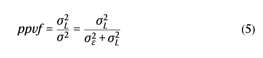
这里，\({\sigma }_{L}^{2}\) 估计为对 MHW 持续时间、年频率或强度应用 x 年滑动平均（例如 5 年、10 年或 25 年）后的方差，该处理滤除了高频波动。ppvf 较高的区域表明，长时间尺度变率在这些区域中明显区别于短时间尺度变率，因此这些区域中的变率至少可能具有潜在可预测性。Here, \({\sigma }_{L}^{2}\) is estimated as the variance of MHW duration, annual frequency, or intensity after applying an x -year running mean (e.g., 5-year, 10-year, or 25-year), which filters out high-frequency fluctuations. The high ppvf regions identify those in which long timescale variability stands out clearly from short timescale variability, and thus variability in those regions may be at least potentially predictable.
平均可预测时间分析Average predictability time analysis
为量化 MHW 持续时间、年频率和强度的主导可预测分量，我们采用由文献 61、62 开发并广泛用于气候可预测性研究的诊断性平均可预测时间（APT）方法 63、64。APT 对给定变率模态在高于气候态噪声的水平上保持可预测性的时间长度提供客观度量，其定义为所有预报提前期上可预测性的积分：To quantify the dominant predictable components of MHW duration, annual frequency, and intensity, we apply the diagnostic Average Predictability Time (APT) method that was developed by refs. 61 , 62 , and broadly used in climate predictability studies 63 , 64 . APT provides an objective measure of how long a given mode of variability remains predictable above climatological noise, which is defined as the integral of predictability over all the lead times:
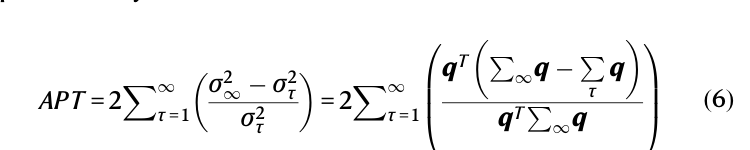
其中，\({\sigma }_{\infty }^{2}\) 表示气候态方差，\({\sigma }_{\tau }^{2}\) 表示提前期 τ 上的集合预报方差，\({{{\bf{q}}}}\) 为投影向量。当预报完美时，该度量趋近于 1；当集合预报离散度趋近于气候态离散度时，该度量趋近于 0。由于本研究使用的前工业模拟仅有一个集合成员，我们采用基于线性回归的框架而非基于集合的预报误差协方差来估计 APT。回归模型为：where \({\sigma }_{\infty }^{2}\) denote climatological variance, \({\sigma }_{\tau }^{2}\) denote the ensemble forecast variance at a lead time τ and \({{{\bf{q}}}}\) is a projection vector. This measure approaches one for a perfect forecast and zero when the ensemble forecast spread approaches the climatological spread. Since the preindustrial simulation used in this study only has one ensemble member, we estimate APT using a linear regression-based framework rather than ensemble-based forecast error covariance. The regression model is:
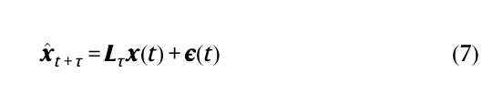
其中，\(x\left(t\right)\) 是时刻 \(t\) 的预测因子，\({\hat{{{{\boldsymbol{x}}}}}}_{t+\tau }\) 是时刻 \(t+\tau\) 的被预测量，\({{{{\boldsymbol{L}}}}}_{\tau }\) 是回归系数，\({{{\boldsymbol{\epsilon }}}}\left(t\right)\) 是残差项。随后，气候态矩阵和预报矩阵具有以下形式：where \(x\left(t\right)\) is the predictor at time \(t\) , \({\hat{{{{\boldsymbol{x}}}}}}_{t+\tau }\) is the predictand at time \(t+\tau\) , \({{{{\boldsymbol{L}}}}}_{\tau }\) is the regression coefficient and \({{{\boldsymbol{\epsilon }}}}\left(t\right)\) is a residual term. Then, the climatology and forecast matrices have the following form:
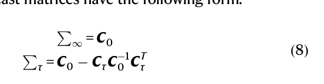
其中，\({{{{\rm{C}}}}}_{0}\) 为气候态方差，\({{{{\rm{C}}}}}_{{{{\rm{\tau }}}}}\) 表示时滞协方差矩阵。where \({{{{\rm{C}}}}}_{0}\) is the climatological variance, \({{{{\rm{C}}}}}_{{{{\rm{\tau }}}}}\) denotes the time lagged covariance matrix.
结合式（5）–（7），由 APT 最大化导致的特征值问题变为：Combining Eqs. ( 5 )–( 7 ), the eigenvalue problem caused by maximization of APT becomes:
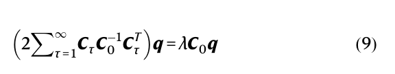
其中，\(\lambda\) 表示特征值，即与各分量相对应的 APT 值。式（9）左侧表示信号协方差的积分，右侧表示总气候态协方差。where \(\lambda\) denote the eigenvalues which are the APT values corresponding to each component. The left side in Eq. ( 9 ) represents the integration of signal covariance, and the right side represents the total climatological covariance.
我们将预测变量和因变量投影到前 30 个主成分（PC）上，从而得到 CESM1 前工业模拟的 500 年 PC 时间序列。随后将 PC 分为两部分：前 250 年用作训练数据以估计最优 APT 分量，其余 250 年用于验证 65。遵循文献 62，我们采用复相关系数平方 \({R}_{{{{\rm{\tau }}}}}^{2}\) 来估计各提前期 \(\tau\) 上的潜在可预测性。We project the predictor variables and the dependent variables onto the first 30 principal components (PCs), which results in a 500-year PC time series for CESM1 preindustrial simulations. The PCs are then divided into two parts: the first 250 years are used as training data to estimate the optimal APT component, and the remaining 250 years are used for verification 65 . Following ref. 62 , we adopt the squared multiple correlation \({R}_{{{{\rm{\tau }}}}}^{2}\) to estimate the potential predictability at each lead time \(\tau\) .
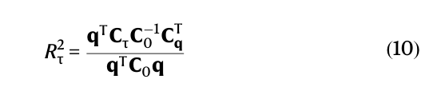
其中，\({{{\boldsymbol{q}}}}\) 由训练数据计算得到，协方差项由验证数据获得。\({R}_{\tau }^{2}\) 随时间下降的速率反映了各分量的可预测性。\({R}_{\tau }^{2}\) 下降越慢，潜在可预测性越高。where \({{{\boldsymbol{q}}}}\) is calculated from the training data, and the covariance terms are obtained from verification data. The rate by which \({R}_{\tau }^{2}\) declines over time reflects the predictability of each component. The slower the decline in \({R}_{\tau }^{2}\) , the higher the potential predictability.
除 CESM1 前工业模拟外，我们还将 APT 方法应用于 1920 至 2024 年的 CESM1 历史大集合。得益于大集合（40 个成员），集合平均代表了气候对人为强迫的响应。我们从每个成员中移除集合平均，仅保留残差，这与前工业控制模拟一样代表内部变率。我们对每个成员残差的 APT1 重复进行分析，发现结果与前工业控制模拟大体相似（补充图 9）。这支持了该方法的可靠性，并表明我们的 MHW 可预测性在人为强迫下仍然存在。Aside from CESM1 preindustrial simulations, we apply the APT method for CESM1 historical large ensemble from 1920 to 2024. Benefited from large ensemble (40 members), the ensemble mean represents climate response to anthropogenic forcing. We remove the ensemble mean from each member, leaving only the residual, which represents the internal variability as in line with the preindustrial control. We repeat our analysis on APT1 for each member’s residual and find the result is largely similar to the preindustrial control (Supplementary Fig. 9 ). This supports the methodological reliability, indicating that our MHW predictability persists under anthropogenic forcing.
显著性检验Significance test
我们采用双样本 Student’s t 检验来确定动力海洋和 slab 海洋试验之间 MHW 持续时间、年频率和强度差异的显著性。我们在每个网格点进行检验，以判断这些差异在 95% 置信水平上是否具有统计显著性。We use a two-sample Student’s t test to determine the significance of the differences in MHW duration, annual frequency, and intensity between dynamic and slab ocean experiments. We conduct the test at each grid point to see whether the differences are statistically significant at the 95% confidence level.
我们还通过 Monte Carlo 试验评估 APT 的统计显著性。我们生成两个均值为零、方差为 1 的独立随机矩阵，并将其代入式（9），以获得一组经优化且有序的 APT 值序列。我们重复这一过程 100 次，以构建零假设下特征值的参考分布。随后，我们选择该分布的第 95 百分位数作为显著性阈值。若由训练数据计算的 APT 值超过该阈值，则拒绝零假设，并认为该 APT 值在 5% 水平上具有统计显著性。We also assess the statistical significance of the APT through Monte Carlo experiments. We generate two independent random matrices with zero mean and unit variance and put them into Eq. ( 9 ) to obtain a set of optimized ordered sequence of APT values. We repeat this procedure 100 times to construct a reference distribution of eigenvalues under the null hypothesis. Then, we select the 95th percentile of this distribution as the significance threshold. If the APT value computed from the training data exceeds this threshold, we reject the null hypothesis and conclude that the APT value is statistically significant at the 5% level.
此外，我们采用基于 95% 置信阈值的双尾显著性检验，评估 APT1 与 AMOC 流函数之间空间相关分布型的统计显著性。In addition, we assess the statistical significance of the spatial correlation patterns between APT1 and the AMOC stream-function using a two-tailed significance test based on the 95% confidence threshold.
数据可用性Data availability
CESM1 模型数据可在 https://gdex.ucar.edu/datasets/d651027/dataaccess/ 获取。CMIP3 模型数据可在 https://aims2.llnl.gov/search 获取。ERSSTv5 数据可在 https://www.ncei.noaa.gov/products/extended-reconstructed-sst 获取。CMAP Precipitation 数据可在 https://psl.noaa.gov/data/gridded/data.cmap.html 获取。CESM1 model data are available at https://gdex.ucar.edu/datasets/d651027/dataaccess/ . CMIP3 model data are available at https://aims2.llnl.gov/search . ERSSTv5 data are available at https://www.ncei.noaa.gov/products/extended-reconstructed-sst . CMAP Precipitation data are available at https://psl.noaa.gov/data/gridded/data.cmap.html .
代码可用性Code availability
图件使用 NCAR Command Language（NCL，版本 6.5.0）[Software] 生成。（2018）。Boulder, Colorado：UCAR/NCAR/CISL/TDD（https://doi.org/10.5065/D6WD3XH5）。用于生成图 1–5 的代码可从 Zenodo 66 获取，网址为 https://doi.org/10.5281/zenodo.18357158。Figures are generated via the NCAR Command Language (NCL, Version 6.5.0) [Software]. (2018). Boulder, Colorado: UCAR/NCAR/CISL/TDD ( https://doi.org/10.5065/D6WD3XH5 ). The codes to generate Figs. 1 – 5 are available from Zenodo 66 at https://doi.org/10.5281/zenodo.18357158 .
致谢Acknowledgements
本研究获得美国国家科学基金会（OCE-2123422、AGS-2053121 和 AGS-2237743）资助。我们感谢 Timothy M. DelSole 提出的宝贵意见和建议。This study has been supported by U.S. National Science Foundation (OCE-2123422, AGS-2053121, and AGS-2237743). We thank Timothy M. DelSole for helpful comments and suggestions.
作者信息Author information
作者及所属机构Authors and Affiliations
加州大学河滨分校地球科学与行星科学系，美国加利福尼亚州河滨市Department of Earth Sciences and Planetary Sciences, University of California Riverside, Riverside, CA, USA
Xianglin Ren 与 Wei LiuXianglin Ren & Wei Liu
美国国家海洋和大气管理局/地球物理流体动力学实验室，美国新泽西州普林斯顿NOAA/Geophysical Fluid Dynamics Laboratory, Princeton, NJ, USA
Liping ZhangLiping Zhang
大气研究大学联合体，美国科罗拉多州博尔德University Corporation for Atmospheric Research, Boulder, CO, USA
Liping ZhangLiping Zhang
贡献Contributions
X.R. 开展了分析并撰写了论文初稿。W.L. 构思了本研究。L.Z. 指导了可预测性分析。所有作者均参与了解读结果并对论文进行了改进。X.R. performed the analysis and wrote the original draft of the paper. W.L. conceived the study. L.Z. guided the predictability analysis. All authors contributed to interpreting the results and made improvements to the paper.
通信作者Corresponding author
通信请联系 Wei Liu。Correspondence to Wei Liu .
伦理声明Ethics declarations
竞争性利益Competing interests
作者声明不存在竞争性利益。The authors declare no competing interests.
同行评审Peer review
同行评审信息Peer review information
Nature Communications 感谢 Marlos Goes 和其他匿名审稿人对本研究同行评审所作的贡献。同行评审文件可供查阅。Nature Communications thanks Marlos Goes and the other anonymous reviewer(s) for their contribution to the peer review of this work. A peer review file is available.
附加信息Additional information
出版商声明：Springer Nature 对已发表地图中的管辖权主张和机构隶属关系保持中立。Publisher’s note Springer Nature remains neutral with regard to jurisdictional claims in published maps and institutional affiliations.
权利与许可Rights and permissions
开放获取：本文采用知识共享署名 4.0 国际许可协议（Creative Commons Attribution 4.0 International License）授权，该许可允许在任何媒介或格式中使用、共享、改编、分发和复制，只要您适当地注明原作者和来源，提供指向知识共享许可协议的链接，并标明是否作出更改。除非在材料的署名行中另有说明，本文中的图像或其他第三方材料均包含在本文的知识共享许可协议中。如果材料未包含在本文的知识共享许可协议中，且您的预期使用不受法定规定允许或超出允许的使用范围，您将需要直接向版权所有者获取许可。要查看本许可协议的副本，请访问 http://creativecommons.org/licenses/by/4.0/。Open Access This article is licensed under a Creative Commons Attribution 4.0 International License, which permits use, sharing, adaptation, distribution and reproduction in any medium or format, as long as you give appropriate credit to the original author(s) and the source, provide a link to the Creative Commons licence, and indicate if changes were made. The images or other third party material in this article are included in the article’s Creative Commons licence, unless indicated otherwise in a credit line to the material. If material is not included in the article’s Creative Commons licence and your intended use is not permitted by statutory regulation or exceeds the permitted use, you will need to obtain permission directly from the copyright holder. To view a copy of this licence, visit http://creativecommons.org/licenses/by/4.0/ .
重印本和许可Reprints and permissions
参考文献References
文献条目按原文保留，以确保可追溯性；正文中的引文编号对应此表。Bibliographic records are retained in the source language for traceability; in-text citation numbers refer to this list.
- Frölicher, T. L., Fischer, E. M. & Gruber, N. Marine heatwaves under global warming. Nature 560 , 360–364 (2018). Article ADS PubMed Google Scholar
- Oliver, E. C. J. et al. Projected Marine Heatwaves in the 21st Century and the Potential for Ecological Impact. Front. Mar. Sci. 6 , 734 (2019). Article Google Scholar
- Holbrook, N. J. et al. ENSO-Driven ocean extremes and their ecosystem impacts. Geophys. Monogr. Ser . 409–428 (2020).
- Capotondi, A. et al. A global overview of marine heatwaves in a changing climate. Commun. Earth Environ. 5 , 701 (2024). Article ADS Google Scholar
- Bond, N. A., Cronin, M. F., Freeland, H. & Mantua, N. Causes and impacts of the 2014 warm anomaly in the NE Pacific. Geophys. Res. Lett. 42 , 3414–3420 (2015). Article ADS Google Scholar
- Chen, H.-H. et al. Combined oceanic and atmospheric forcing of the 2013/14 marine heatwave in the northeast Pacific. npj Clim. Atmos. Sci. 6 , 1–10 (2023). Article CAS Google Scholar
- Neely, K. L. et al. Too hot to handle? The impact of the 2023 marine heatwave on Florida Keys coral. Front. Mar. Sci. 11 , 1489273 (2024). Article Google Scholar
- Wernberg, T. et al. An extreme climatic event alters marine ecosystem structure in a global biodiversity hotspot. Nat. Clim. Change 3 , 78–82 (2013). Article ADS Google Scholar
- Guo, X. et al. Threat by marine heatwaves to adaptive large marine ecosystems in an eddy-resolving model. Nat. Clim. Change 12 , 179–186 (2022). Article ADS Google Scholar
- Sen Gupta, A. et al. Drivers and impacts of the most extreme marine heatwaves events. Sci. Rep. 10 , 19359 (2020). Article ADS PubMed PubMed Central Google Scholar
- Laufkötter, C., Zscheischler, J. & Frölicher, T. L. High-impact marine heatwaves attributable to human-induced global warming. Science 369 , 1621–1625 (2020). Article ADS PubMed Google Scholar
- Amaya, D. J. et al. Marine heatwaves need clear definitions so coastal communities can adapt. Nature 616 , 29–32 (2023). Article ADS CAS PubMed Google Scholar
- Di Lorenzo, E. & Mantua, N. Multi-year persistence of the 2014/15 North Pacific marine heatwave. Nat. Clim. Change 6 , 1042–1047 (2016). Article ADS Google Scholar
- Scannell, H. A., Johnson, G. C., Thompson, L., Lyman, J. M. & Riser, S. C. Subsurface evolution and persistence of marine heatwaves in the Northeast Pacific. Geophys. Res. Lett. 47 , e2020GL090548 (2020). Article ADS Google Scholar
- Ren, X., Liu, W., Capotondi, A., Amaya, D. J. & Holbrook, N. J. The Pacific Decadal Oscillation modulated marine heatwaves in the Northeast Pacific during past decades. Commun. Earth Environ. 4 , 218 (2023). Article ADS Google Scholar
- Feng, M., McPhaden, M. J., Xie, S.-P. & Hafner, J. La Niña forces unprecedented Leeuwin Current warming in 2011. Sci. Rep. 3 , 1277 (2013). Article ADS CAS PubMed PubMed Central Google Scholar
- Zinke, J. et al. Corals record long-term Leeuwin current variability including Ningaloo Niño/Niña since 1795. Nat. Common. 5 , 3607 (2014). Article ADS CAS Google Scholar
- Darmaraki, S. et al. Marine heatwaves in the Mediterranean Sea: A literature review. Mediterr. Mar. Sci. 25 , 586–620 (2024). Article Google Scholar
- Ren, X. & Liu, W. The role of a weakened Atlantic meridional overturning circulation in modulating marine heatwaves in a warming climate. Geophys. Res. Lett. 48 , e2021GL095941 (2021). Article ADS Google Scholar
- Msadek, R., Dixon, K. W., Delworth, T. L. & Hurlin, W. Assessing the predictability of the Atlantic meridional overturning circulation and associated fingerprints. Geophys. Res. Lett. 37 , L19608 (2010). ADS Google Scholar
- Teng, H., Branstator, G. & Meehl, G. A. Predictability of the Atlantic overturning circulation and associated surface patterns in two CCSM3 climate change ensemble experiments. J. Clim. 24 , 6054–6076 (2011). Article ADS Google Scholar
- Gregory, C. H. et al. Global marine heatwaves under different flavors of ENSO. Geophys. Res. Lett. 51 , e2024GL110399 (2024). Article ADS Google Scholar
- Holbrook, N. J. et al. Keeping pace with marine heatwaves. Nat. Rev. Earth Environ. 1 , 482–493 (2020). Article ADS Google Scholar
- Jacox, M. G. et al. Global seasonal forecasts of marine heatwaves. Nature 604 , 486–490 (2022). Article ADS CAS PubMed PubMed Central Google Scholar
- Dommenget, D. The slab ocean El Niño. Geophys. Res. Lett. 37 , L20701 (2010). Article ADS Google Scholar
- Dommenget, D., Haase, S., Bayr, T. & Frauen, C. Analysis of the Slab Ocean El Nino atmospheric feedbacks in observed and simulated ENSO dynamics. Clim. Dyn. 42 , 3187–3205 (2014). Article Google Scholar
- Neelin, J. D. et al. ENSO theory. J. Geophys. Res. Oceans 103 , 14261–14290 (1998). Article ADS Google Scholar
- Tozuka, T. Importance of the vertical mixing process in the development of El Niño Modoki. npj Clim. Atmos. Sci. 8 , 76 (2025). Article Google Scholar
- Patrizio, C. R. & Thompson, D. W. J. Quantifying the role of ocean dynamics in ocean mixed-layer temperature variability. J. Clim. 34 , 2567–2589 (2021). Article ADS Google Scholar
- Orihuela-Pinto, B., Santoso, A., England, M. H. & Taschetto, A. S. Reduced ENSO variability due to a collapsed atlantic meridional overturning circulation. J. Clim. 35 , 5307–5320 (2022). Article ADS Google Scholar
- Fedorov, A. V. Is El Nino changing? Science 288 , 1997–2002 (2000). Article ADS CAS PubMed Google Scholar
- Huang, B., Xue, Y., Zhang, D., Kumar, A. & McPhaden, M. J. The NCEP GODAS ocean analysis of the tropical Pacific mixed layer heat budget on seasonal to interannual time scales. J. Clim. 23 , 4901–4925 (2010). Article ADS Google Scholar
- Kelly, K. A. et al. Western boundary currents and frontal air-sea interaction: Gulf Stream and Kuroshio Extension. J. Clim. 23 , 5644–5667 (2010). Article ADS Google Scholar
- Boer, G. J. Long time-scale potential predictability in an ensemble of coupled climate models. Clim. Dyn. 23 , 29–44 (2004). Article Google Scholar
- Boer, G. J. & Lambert, S. J. Multi-model decadal potential predictability of precipitation and temperature. Geophys. Res. Lett. 35 , L05706 (2008). Article ADS Google Scholar
- Espinosa, W. et al. The shortwave cloud-SST feedback amplifies multidecadal variability in the southeast Pacific. Geophys. Res. Lett. 51 , e2024GL111039 (2024). Article ADS Google Scholar
- Middlemas, M. S., Zhang, H. & Clement, A. C. Contributions of atmospheric and oceanic feedbacks to northeast subtropical SST variability. Clim. Dyn. 52 , 2371–2388 (2019). Google Scholar
- Dommenget, D. & Latif, M. Generation of hyper climate modes. Geophys. Res. Lett. 35 , L02706 (2008). Article ADS Google Scholar
- Martinez-Villalobos, C. & Vimont, D. J. The role of the mean state in meridional mode structure and growth. J. Clim. 29 , 3907–3921 (2016). Article ADS Google Scholar
- Caesar, L., Rahmstorf, S., Robinson, A., Feulner, G. & Saba, V. Observed fingerprint of a weakening Atlantic ocean overturning circulation. Nature 556 , 191–196 (2018). Article ADS CAS PubMed Google Scholar
- Li, K.-Y. & Liu, W. Weakened Atlantic Meridional Overturning Circulation causes the historical North Atlantic Warming Hole. Commun. Earth Environ. 6 , 416 (2025). Article ADS Google Scholar
- Delworth, T., Manabe, S. & Stouffer, R. J. Interdecadal variations of the thermohaline circulation in a coupled ocean-atmosphere model. J. Clim. 6 , 1993–2011 (1993). Article ADS Google Scholar
- Sévellec, F. & Fedorov, A. V. The leading, interdecadal eigenmode of the Atlantic meridional overturning circulation in a realistic ocean model. J. Clim. 26 , 2160–2183 (2013). Article ADS Google Scholar
- Ma, X. et al. Evolving AMOC multidecadal variability under different CO 2 forcings. Clim. Dyn. 57 , 593–610 (2021). Article Google Scholar
- Zhang, J. & Zhang, R. On the evolution of Atlantic meridional overturning circulation fingerprint and implications for decadal predictability in the North Atlantic. Geophys. Res. Lett. 42 , 5419–5426 (2015). Article ADS Google Scholar
- Liu, W., Fedorov, A. V., Xie, S.-P. & Hu, S. Climate impacts of a weakened Atlantic Meridional Overturning Circulation in a warming climate. Sci. Adv. 6 , eaaz4876 (2020). Article ADS PubMed PubMed Central Google Scholar
- Mimi, M. S. & Liu, W. Atlantic Meridional Overturning Circulation slowdown modulates wind-driven circulations in a warmer climate. Commun. Earth Environ. 5 , 727 (2024). Article ADS Google Scholar
- Huang, B. et al. Improvements of the daily optimum interpolation sea surface temperature (DOISST) version 2.1. J. Clim. 34 , 2923–2939 (2021). Article ADS Google Scholar
- Huang, B. et al. Extended reconstructed sea surface temperature, version 6 (ERSSTv6). Part I: An artificial neural network approach. J. Clim. 38 , 1105–1121 (2025). Article ADS Google Scholar
- Xie, P. & Arkin, P. A. Global precipitation: A 17-year monthly analysis based on gauge observations, satellite estimates, and numerical model outputs. Bull. Am. Meteorol. Soc. 78 , 2539–2558 (1997). Article ADS Google Scholar
- Baumgaertner, A. J. G., Jöckel, P., Kerkweg, A., Sander, R. & Tost, H. Implementation of the Community Earth System Model (CESM) version 1.2.1 as a new base model into version 2.50 of the MESSy framework. Geosci. Model Dev. 9 , 125–135 (2016). Article ADS Google Scholar
- Sun, W. et al. Marine heatwaves and cold spells associated with global mixed-layer depth variations. Geophys. Res. Lett. 51 , e2024GL112325 (2024). Article ADS Google Scholar
- Hobday, A. J. et al. A hierarchical approach to defining marine heatwaves. Prog. Oceanogr 141 , 227–238 (2016). Article ADS Google Scholar
- Kay, J. E. et al. The Community Earth System Model (CESM) large ensemble project: a community resource for studying climate change in the presence of internal climate variability. Bull. Am. Meteorol. Soc. 96 , 1333–1349 (2015). Article ADS Google Scholar
- Pilo, G. S. et al. Sensitivity of marine heatwave metrics to ocean model resolution. Geophys. Res. Lett. 46 , 14604–14612 (2019). Article ADS Google Scholar
- Deser, C. et al. Future changes in the intensity and duration of marine heat and cold waves: insights from coupled model initial-condition large ensembles. J. Clim. 37 , 1877–1902 (2024). Article ADS Google Scholar
- Jin, F.-F., Kim, S. T. & Bejarano, L. A coupled-stability index for ENSO. Geophys. Res. Lett. 33 , L23708 (2006). Article ADS Google Scholar
- Santoso, A., McPhaden, M. J. & Cai, W. The defining characteristics of ENSO extremes and the strong 2015/2016 El Niño. Rev. Geophys. 55 , 1079–1129 (2017). Article ADS Google Scholar
- Garuba, O. et al. Slab ocean component of the energy exascale earth system model (E3SM): development, evaluation, and application to understanding earth system sensitivity. J. Adv. Model. Earth Syst. 16 , e2023MS003910 (2024). Article ADS Google Scholar
- Small, R. J., Bryan, F. O., Bishop, S. P., Larson, S. & Tomas, R. A. What drives upper-ocean temperature variability in coupled climate models and observations? J. Clim. 33 , 577–596 (2020). Article ADS Google Scholar
- DelSole, T. & Tippett, M. K. Average predictability time. Part I: theory. J. Atmos. Sci. 66 , 1172–1187 (2009). Article ADS Google Scholar
- DelSole, T. & Tippett, M. K. Average predictability time. Part II: seamless diagnoses of predictability on multiple time scales. J. Atmos. Sci. 66 , 1188–1204 (2009). Article ADS Google Scholar
- Zhang, L., Delworth, T. L. & Jia, L. Diagnosis of decadal predictability of southern ocean sea surface temperature in the GFDL CM2.1 model. J. Clim. 30 , 6309–6328 (2017). Article ADS Google Scholar
- Srivastava, A. & DelSole, T. Decadal predictability without ocean dynamics. Proc. Natl. Acad. Sci. USA. 114 , 2177–2182 (2017). Article ADS CAS PubMed PubMed Central Google Scholar
- Jia, L. & DelSole, T. Diagnosis of multiyear predictability on continental scales. J. Clim. 24 , 5108–5124 (2011). Article ADS Google Scholar
- Ren, X., Liu, W. & Zhang, L. Ocean dynamics shape marine heatwaves and their predictability. Zenodo https://doi.org/10.5281/zenodo.18357158 (2026).
补充信息Supplementary Information
本文件包括：补充图 1–12 和补充表 1。This file includes: Supplementary Figures 1–12 and Table 1.
补充图Supplementary Figures
补充图 1 | 基于月尺度定义的动力海洋和 slab 海洋中的海洋热浪。
Supplementary Fig. 1 | Marine heatwaves in dynamic and slab oceans based on a monthly definition.
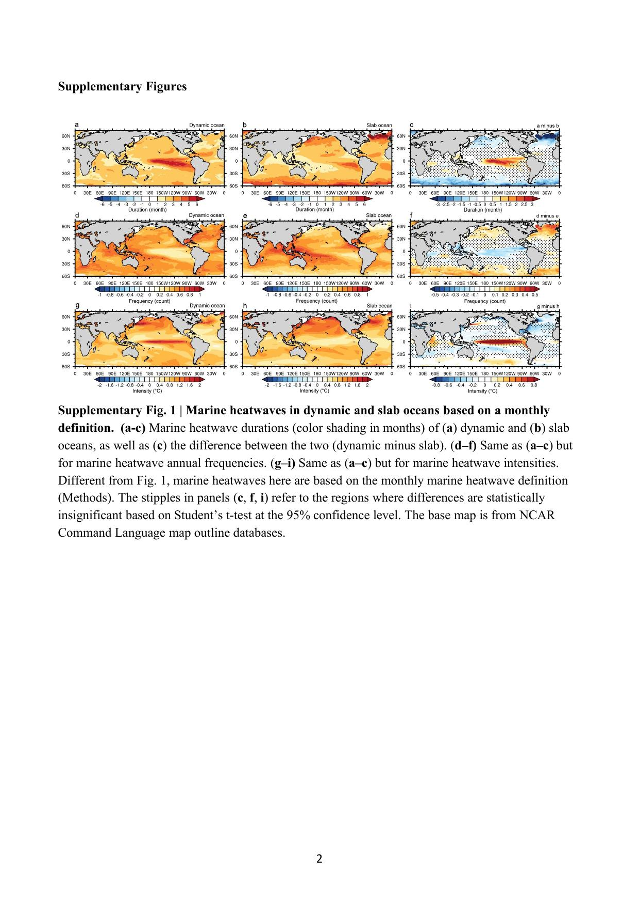
(a-c) (a) 动力海洋和 (b) slab 海洋中的海洋热浪持续时间（以月为单位的颜色阴影），以及 (c) 二者之差（动力海洋减 slab 海洋）。(d–f) 与 (a–c) 相同，但表示海洋热浪年发生频率。(g–i) 与 (a–c) 相同，但表示海洋热浪强度。不同于图 1，此处的海洋热浪基于月尺度海洋热浪定义（方法）。(c、f、i) 面板中的点状标记表示依据 Student’s t 检验、在 95% 置信水平下差异在统计学上不显著的区域。底图来自 NCAR Command Language 地图轮廓数据库。(a-c) Marine heatwave durations (color shading in months) of (a) dynamic and (b) slab oceans, as well as (c) the difference between the two (dynamic minus slab). (d–f) Same as (a–c) but for marine heatwave annual frequencies. (g–i) Same as (a–c) but for marine heatwave intensities. Different from Fig. 1, marine heatwaves here are based on the monthly marine heatwave definition (Methods). The stipples in panels (c, f, i) refer to the regions where differences are statistically insignificant based on Student’s t-test at the 95% confidence level. The base map is from NCAR Command Language map outline databases.
补充图 2 | CMIP3 模式的动力海洋和 slab 海洋中的海洋热浪。
Supplementary Fig. 2 | Marine heatwaves in dynamic and slab oceans of CMIP3 models.
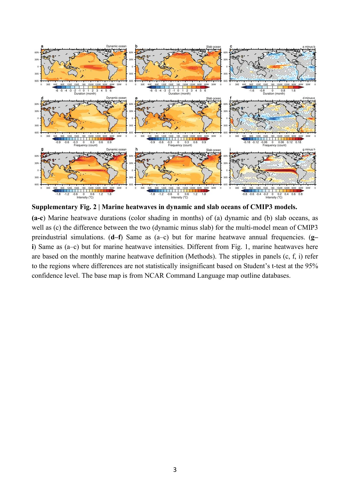
(a-c) CMIP3 工业化前模拟多模式平均中，(a) 动力海洋和 (b) slab 海洋的海洋热浪持续时间（以月为单位的颜色阴影），以及 (c) 二者之差（动力海洋减 slab 海洋）。(d–f) 与 (a–c) 相同，但表示海洋热浪年发生频率。(g–i) 与 (a–c) 相同，但表示海洋热浪强度。不同于图 1，此处的海洋热浪基于月尺度海洋热浪定义（方法）。(c、f、i) 面板中的点状标记表示依据 Student’s t 检验、在 95% 置信水平下差异在统计学上并非不显著的区域。底图来自 NCAR Command Language 地图轮廓数据库。(a-c) Marine heatwave durations (color shading in months) of (a) dynamic and (b) slab oceans, as well as (c) the difference between the two (dynamic minus slab) for the multi-model mean of CMIP3 preindustrial simulations. (d–f) Same as (a–c) but for marine heatwave annual frequencies. (g–i) Same as (a–c) but for marine heatwave intensities. Different from Fig. 1, marine heatwaves here are based on the monthly marine heatwave definition (Methods). The stipples in panels (c, f, i) refer to the regions where differences are not statistically insignificant based on Student’s t-test at the 95% confidence level. The base map is from NCAR Command Language map outline databases.
补充图 3 | 正常和极端厄尔尼诺–南方涛动（ENSO）的 Bjerknes 稳定性。
Supplementary Fig. 3 | Bjerknes stability for normal and extreme El Niño-Southern Oscillation.
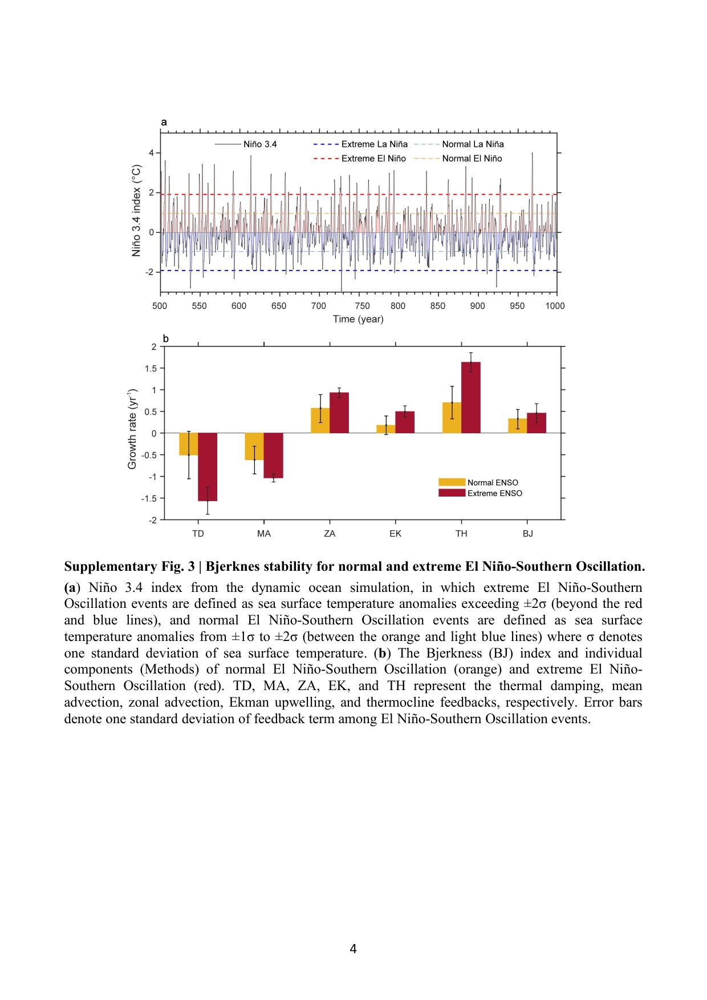
(a) 动力海洋模拟的 Niño 3.4 指数，其中，极端厄尔尼诺–南方涛动（ENSO）事件定义为海表温度距平超过 ±2σ（超出红线和蓝线），正常厄尔尼诺–南方涛动（ENSO）事件定义为海表温度距平介于 ±1σ 至 ±2σ 之间（位于橙线和浅蓝线之间）；σ 表示海表温度的一个标准差。(b) 正常厄尔尼诺–南方涛动（ENSO）（橙色）和极端厄尔尼诺–南方涛动（ENSO）（红色）的 Bjerknes（BJ）指数及其各组成分量（方法）。TD、MA、ZA、EK 和 TH 分别表示热阻尼、平均平流、纬向平流、Ekman 上升流和温跃层反馈。误差棒表示 ENSO 事件之间反馈项的一个标准差。(a) Niño 3.4 index from the dynamic ocean simulation, in which extreme El Niño-Southern Oscillation events are defined as sea surface temperature anomalies exceeding ±2σ (beyond the red and blue lines), and normal El Niño-Southern Oscillation events are defined as sea surface temperature anomalies from ±1σ to ±2σ (between the orange and light blue lines) where σ denotes one standard deviation of sea surface temperature. (b) The Bjerkness (BJ) index and individual components (Methods) of normal El Niño-Southern Oscillation (orange) and extreme El Niño-Southern Oscillation (red). TD, MA, ZA, EK, and TH represent the thermal damping, mean advection, zonal advection, Ekman upwelling, and thermocline feedbacks, respectively. Error bars denote one standard deviation of feedback term among El Niño-Southern Oscillation events.
补充图 4 | 海洋热浪事件期间的表面热通量演变。
Supplementary Fig. 4 | Surface heat flux evolution during marine heatwave events.
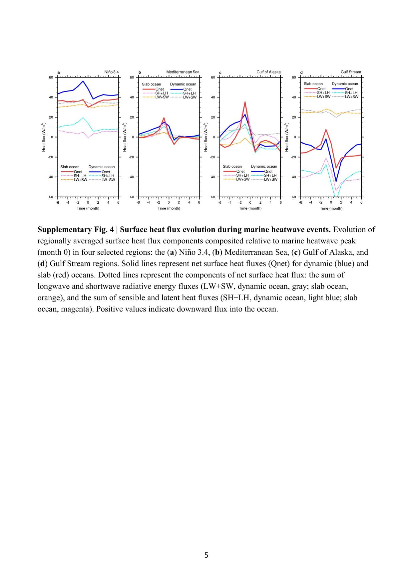
相对于海洋热浪峰值（月 0）合成的四个选定区域的区域平均表面热通量分量演变：(a) Niño 3.4 区、(b) 地中海、(c) 阿拉斯加湾和 (d) 湾流区域。实线表示动力海洋（蓝色）和 slab 海洋（红色）的净表面热通量（Qnet）。虚线表示净表面热通量的组成部分：长波和短波辐射能通量之和（LW+SW；动力海洋为灰色，slab 海洋为橙色），以及感热和潜热通量之和（SH+LH；动力海洋为浅蓝色，slab 海洋为品红色）。正值表示向下进入海洋的通量。Evolution of regionally averaged surface heat flux components composited relative to marine heatwave peak (month 0) in four selected regions: the (a) Niño 3.4, (b) Mediterranean Sea, (c) Gulf of Alaska, and (d) Gulf Stream regions. Solid lines represent net surface heat fluxes (Qnet) for dynamic (blue) and slab (red) oceans. Dotted lines represent the components of net surface heat flux: the sum of longwave and shortwave radiative energy fluxes (LW+SW, dynamic ocean, gray; slab ocean, orange), and the sum of sensible and latent heat fluxes (SH+LH, dynamic ocean, light blue; slab ocean, magenta). Positive values indicate downward flux into the ocean.
补充图 5 | 海洋热浪持续时间的潜在可预测性方差比例。
Supplementary Fig. 5 | Potential predictability variance fraction for marine heatwave duration.
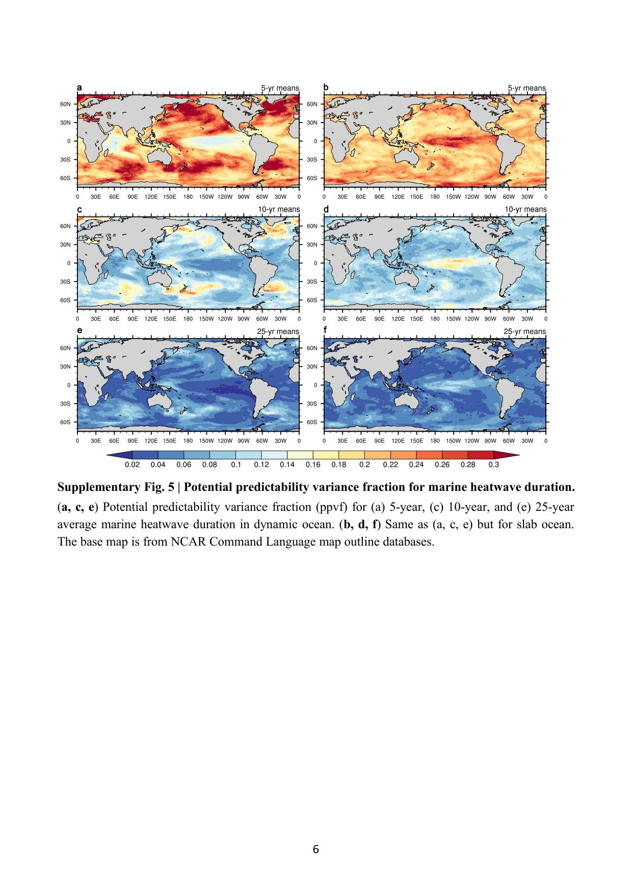
(a、c、e) 动力海洋中 (a) 5 年、(c) 10 年和 (e) 25 年平均海洋热浪持续时间的潜在可预测性方差比例（ppvf）。(b、d、f) 与 (a、c、e) 相同，但表示 slab 海洋。底图来自 NCAR Command Language 地图轮廓数据库。(a, c, e) Potential predictability variance fraction (ppvf) for (a) 5-year, (c) 10-year, and (e) 25-year average marine heatwave duration in dynamic ocean. (b, d, f) Same as (a, c, e) but for slab ocean. The base map is from NCAR Command Language map outline databases.
补充图 6 | 海洋热浪强度的潜在可预测性方差比例。
Supplementary Fig. 6 | Potential predictability variance fraction for marine heatwave intensity.
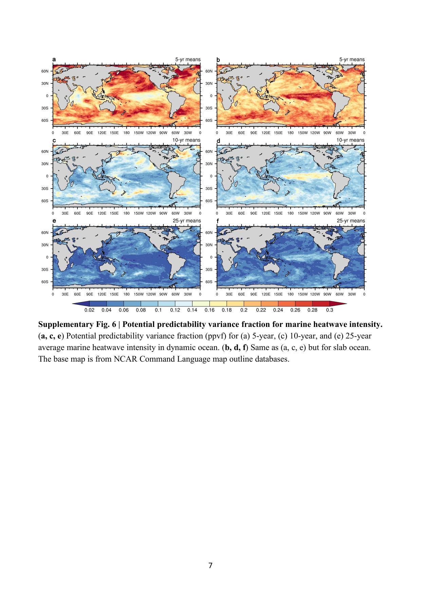
(a、c、e) 动力海洋中 (a) 5 年、(c) 10 年和 (e) 25 年平均海洋热浪强度的潜在可预测性方差比例（ppvf）。(b、d、f) 与 (a、c、e) 相同，但表示 slab 海洋。底图来自 NCAR Command Language 地图轮廓数据库。(a, c, e) Potential predictability variance fraction (ppvf) for (a) 5-year, (c) 10-year, and (e) 25-year average marine heatwave intensity in dynamic ocean. (b, d, f) Same as (a, c, e) but for slab ocean. The base map is from NCAR Command Language map outline databases.
补充图 7 | 动力海洋和 slab 海洋中北大西洋海洋热浪持续时间的可预测性。
Supplementary Fig. 7 | North Atlantic marine heatwave duration predictability in dynamic and slab oceans.
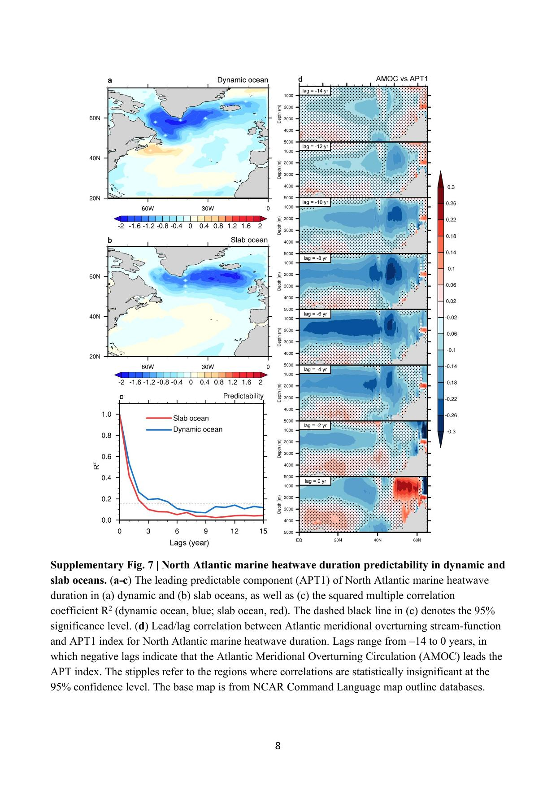
(a-c) 北大西洋海洋热浪持续时间在 (a) 动力海洋和 (b) slab 海洋中的主导可预测分量（APT1），以及 (c) 复相关系数平方 R2（动力海洋，蓝色；slab 海洋，红色）。(c) 中的黑色虚线表示 95% 显著性水平。(d) 大西洋经向翻转流函数与北大西洋海洋热浪持续时间 APT1 指数之间的超前/滞后相关。滞后范围为 –14 至 0 年，其中负滞后表示大西洋经向翻转环流（AMOC）超前于 APT 指数。点状标记表示在 95% 置信水平下相关性在统计学上不显著的区域。底图来自 NCAR Command Language 地图轮廓数据库。(a-c) The leading predictable component (APT1) of North Atlantic marine heatwave duration in (a) dynamic and (b) slab oceans, as well as (c) the squared multiple correlation coefficient R2 (dynamic ocean, blue; slab ocean, red). The dashed black line in (c) denotes the 95% significance level. (d) Lead/lag correlation between Atlantic meridional overturning stream-function and APT1 index for North Atlantic marine heatwave duration. Lags range from –14 to 0 years, in which negative lags indicate that the Atlantic Meridional Overturning Circulation (AMOC) leads the APT index. The stipples refer to the regions where correlations are statistically insignificant at the 95% confidence level. The base map is from NCAR Command Language map outline databases.
补充图 8 | 动力海洋和 slab 海洋中北大西洋海洋热浪强度的可预测性。
Supplementary Fig. 8 | North Atlantic marine heatwave intensity predictability in dynamic and slab oceans.
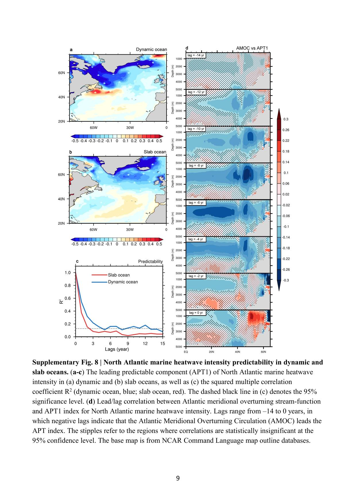
(a-c) 北大西洋海洋热浪强度在 (a) 动力海洋和 (b) slab 海洋中的主导可预测分量（APT1），以及 (c) 复相关系数平方 R2（动力海洋，蓝色；slab 海洋，红色）。(c) 中的黑色虚线表示 95% 显著性水平。(d) 大西洋经向翻转流函数与北大西洋海洋热浪强度 APT1 指数之间的超前/滞后相关。滞后范围为 –14 至 0 年，其中负滞后表示大西洋经向翻转环流（AMOC）超前于 APT 指数。点状标记表示在 95% 置信水平下相关性在统计学上不显著的区域。底图来自 NCAR Command Language 地图轮廓数据库。(a-c) The leading predictable component (APT1) of North Atlantic marine heatwave intensity in (a) dynamic and (b) slab oceans, as well as (c) the squared multiple correlation coefficient R2 (dynamic ocean, blue; slab ocean, red). The dashed black line in (c) denotes the 95% significance level. (d) Lead/lag correlation between Atlantic meridional overturning stream-function and APT1 index for North Atlantic marine heatwave intensity. Lags range from –14 to 0 years, in which negative lags indicate that the Atlantic Meridional Overturning Circulation (AMOC) leads the APT index. The stipples refer to the regions where correlations are statistically insignificant at the 95% confidence level. The base map is from NCAR Command Language map outline databases.
补充图 9 | CESM1 历史模拟中北大西洋海洋热浪频率的可预测性。
Supplementary Fig. 9 | North Atlantic marine heatwave frequency predictability in CESM1 historical simulations.
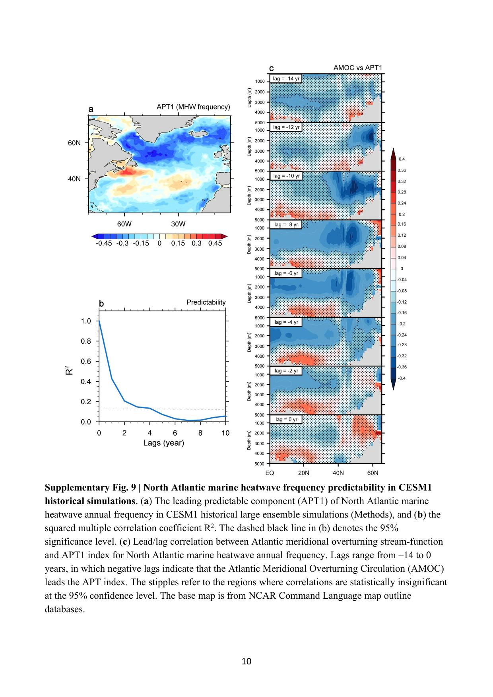
(a) CESM1 历史大集合模拟（方法）中北大西洋海洋热浪年发生频率的主导可预测分量（APT1），以及 (b) 复相关系数平方 R2。(b) 中的黑色虚线表示 95% 显著性水平。(c) 大西洋经向翻转流函数与北大西洋海洋热浪年发生频率 APT1 指数之间的超前/滞后相关。滞后范围为 –14 至 0 年，其中负滞后表示大西洋经向翻转环流（AMOC）超前于 APT 指数。点状标记表示在 95% 置信水平下相关性在统计学上不显著的区域。底图来自 NCAR Command Language 地图轮廓数据库。(a) The leading predictable component (APT1) of North Atlantic marine heatwave annual frequency in CESM1 historical large ensemble simulations (Methods), and (b) the squared multiple correlation coefficient R2. The dashed black line in (b) denotes the 95% significance level. (c) Lead/lag correlation between Atlantic meridional overturning stream-function and APT1 index for North Atlantic marine heatwave annual frequency. Lags range from –14 to 0 years, in which negative lags indicate that the Atlantic Meridional Overturning Circulation (AMOC) leads the APT index. The stipples refer to the regions where correlations are statistically insignificant at the 95% confidence level. The base map is from NCAR Command Language map outline databases.
补充图 10 | 观测到的和模拟的全球海洋热浪。
Supplementary Fig. 10 | Observed and simulated global marine heatwaves.
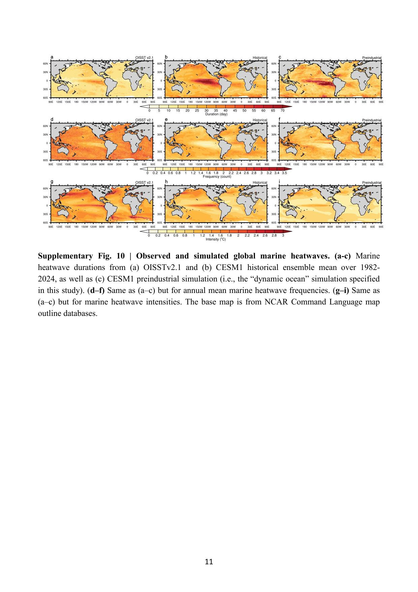
(a-c) 1982-2024 年期间，来自 (a) OISSTv2.1 和 (b) CESM1 历史集合平均的海洋热浪持续时间，以及 (c) CESM1 工业化前模拟（即本研究中指定的“动力海洋”模拟）。(d–f) 与 (a–c) 相同，但表示海洋热浪年平均发生频率。(g–i) 与 (a–c) 相同，但表示海洋热浪强度。底图来自 NCAR Command Language 地图轮廓数据库。(a-c) Marine heatwave durations from (a) OISSTv2.1 and (b) CESM1 historical ensemble mean over 1982-2024, as well as (c) CESM1 preindustrial simulation (i.e., the “dynamic ocean” simulation specified in this study). (d–f) Same as (a–c) but for annual mean marine heatwave frequencies. (g–i) Same as (a–c) but for marine heatwave intensities. The base map is from NCAR Command Language map outline databases.
补充图 11 | 观测到的和模拟的厄尔尼诺–南方涛动（ENSO）。
Supplementary Fig. 11 | Observed and simulated El Niño-Southern Oscillation.
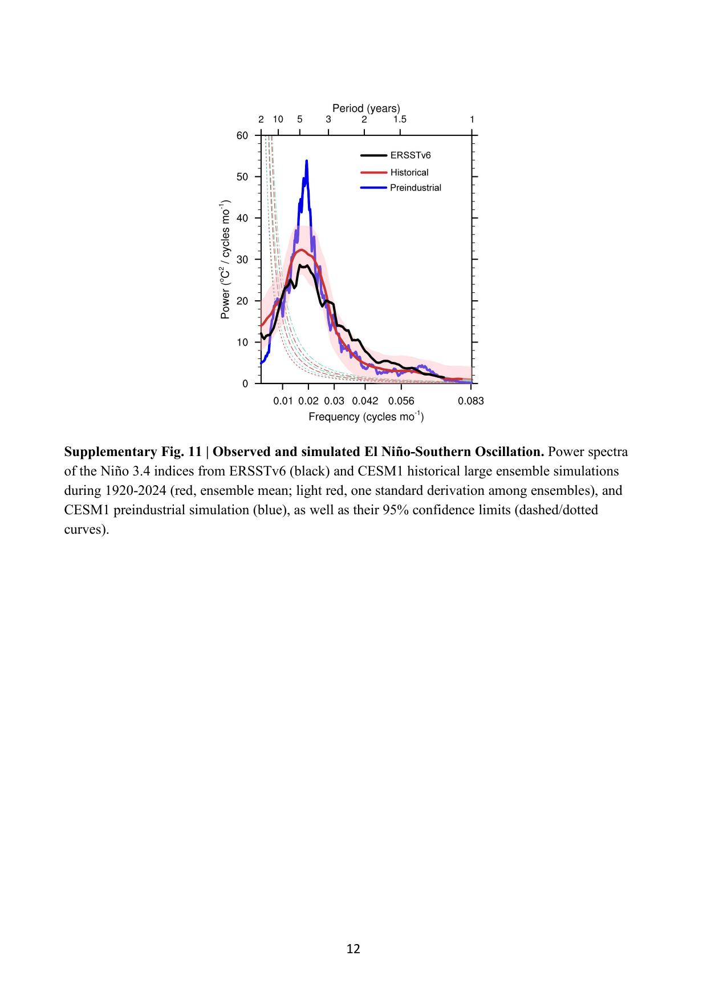
ERSSTv6（黑色）、1920-2024 年期间 CESM1 历史大集合模拟（红色为集合平均；浅红色为集合成员间的一个标准差）以及 CESM1 工业化前模拟（蓝色）的 Niño 3.4 指数功率谱，并给出其 95% 置信限（虚线/点线曲线）。Power spectra of the Niño 3.4 indices from ERSSTv6 (black) and CESM1 historical large ensemble simulations during 1920-2024 (red, ensemble mean; light red, one standard derivation among ensembles), and CESM1 preindustrial simulation (blue), as well as their 95% confidence limits (dashed/dotted curves).
补充图 12 | 观测到的和模拟的极端厄尔尼诺–南方涛动（ENSO）。
Supplementary Fig. 12 | Observed and simulated extreme El Niño-Southern Oscillation.
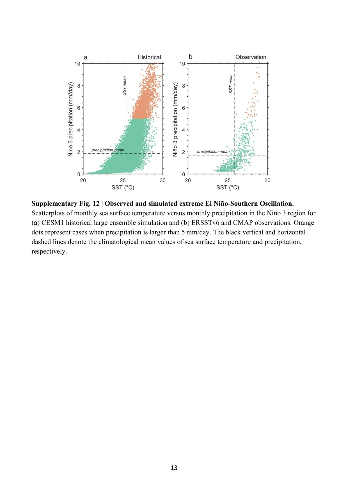
(a) CESM1 历史大集合模拟和 (b) ERSSTv6 及 CMAP 观测中 Niño 3 区月海表温度与月降水量的散点图。橙色点表示降水量大于 5 mm/day 的情形。黑色竖直和水平虚线分别表示海表温度和降水量的气候态平均值。Scatterplots of monthly sea surface temperature versus monthly precipitation in the Niño 3 region for (a) CESM1 historical large ensemble simulation and (b) ERSSTv6 and CMAP observations. Orange dots represent cases when precipitation is larger than 5 mm/day. The black vertical and horizontal dashed lines denote the climatological mean values of sea surface temperature and precipitation, respectively.
补充表Supplementary Table
补充表 1. CMIP3 模式及其模拟。
Supplementary Table 1. CMIP3 models and their simulations.
本研究使用的 CMIP3 模式，以及其动力海洋和 slab 海洋模拟的试验时长。CMIP3 models used in this study, and their experiment durations for simulations with dynamic and slab oceans.
| 模式Model | 动力海洋（年）Dynamic ocean (years) | slab 海洋（年）Slab ocean (years) |
|---|---|---|
| CGCM3.1(T47) | 1001 | 30 |
| CGCM3.1(T63) | 1001 | 30 |
| CSIRO-Mk3.0 | 380 | 60 |
| GFDL-CM2.0 | 500 | 50 |
| GFDL-CM2.1 | 500 | 100 |
| GISS-ER | 500 | 120 |
| INM-CM3.0 | 330 | 60 |
| MIROC3.2 (medres) | 500 | 60 |
| ECHAM5/MPI-OM | 506 | 100 |
| UKMO-HadCM1 | 240 | 71 |
原始补充表页面（英文影印）Original supplementary-table page (English facsimile)
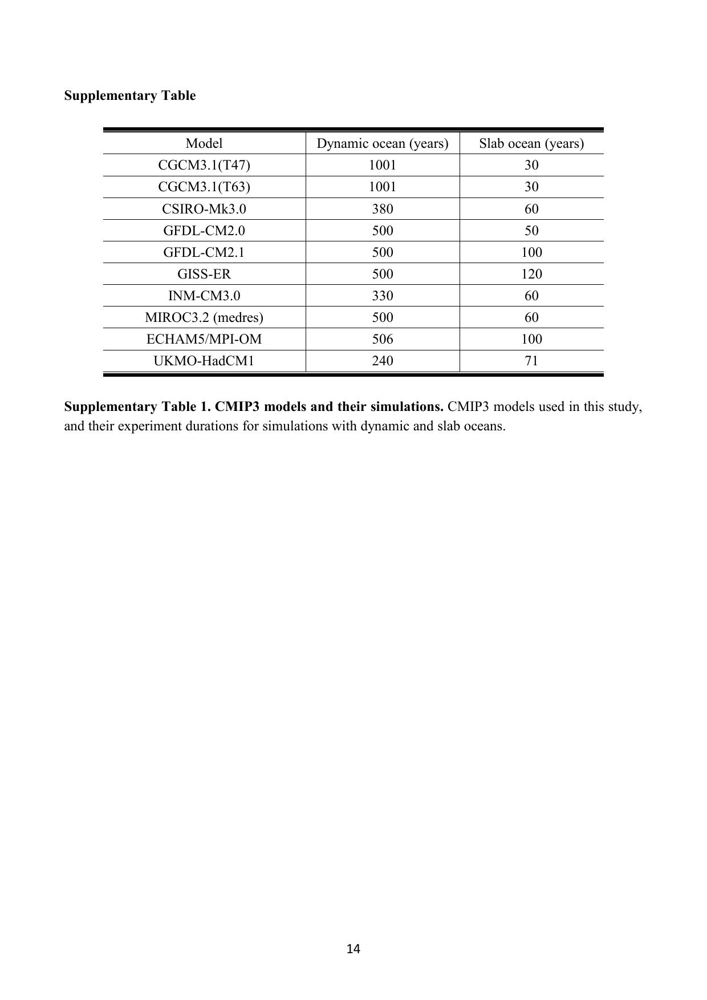